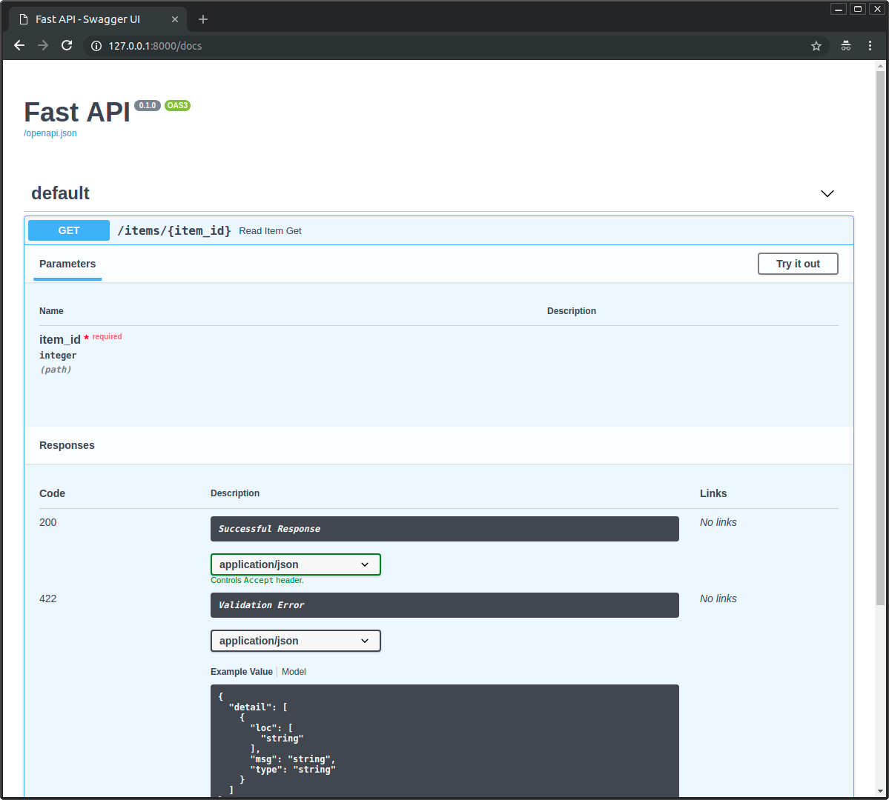
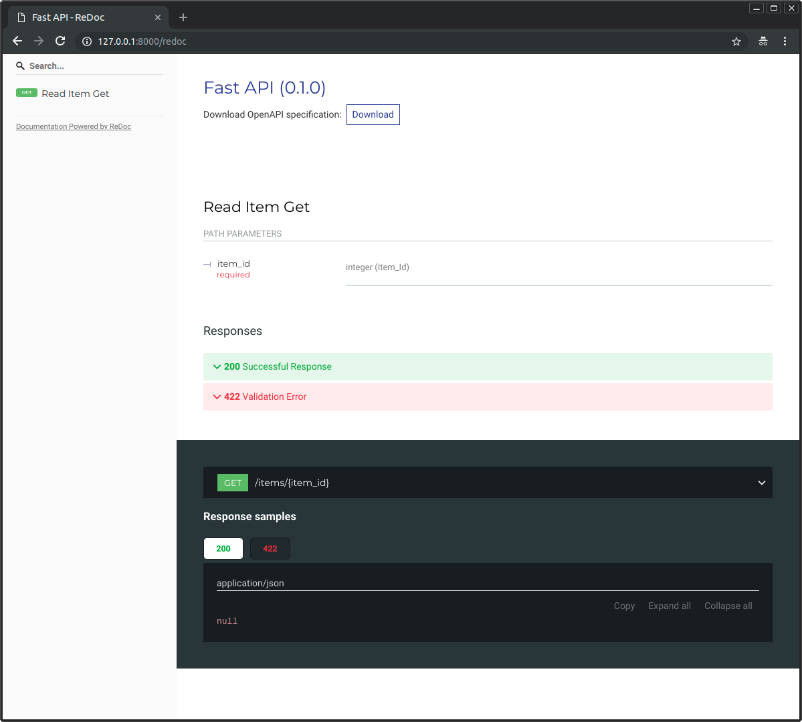
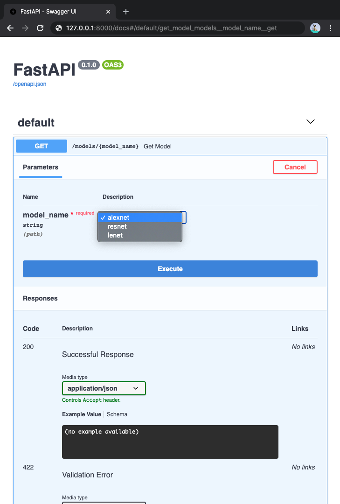
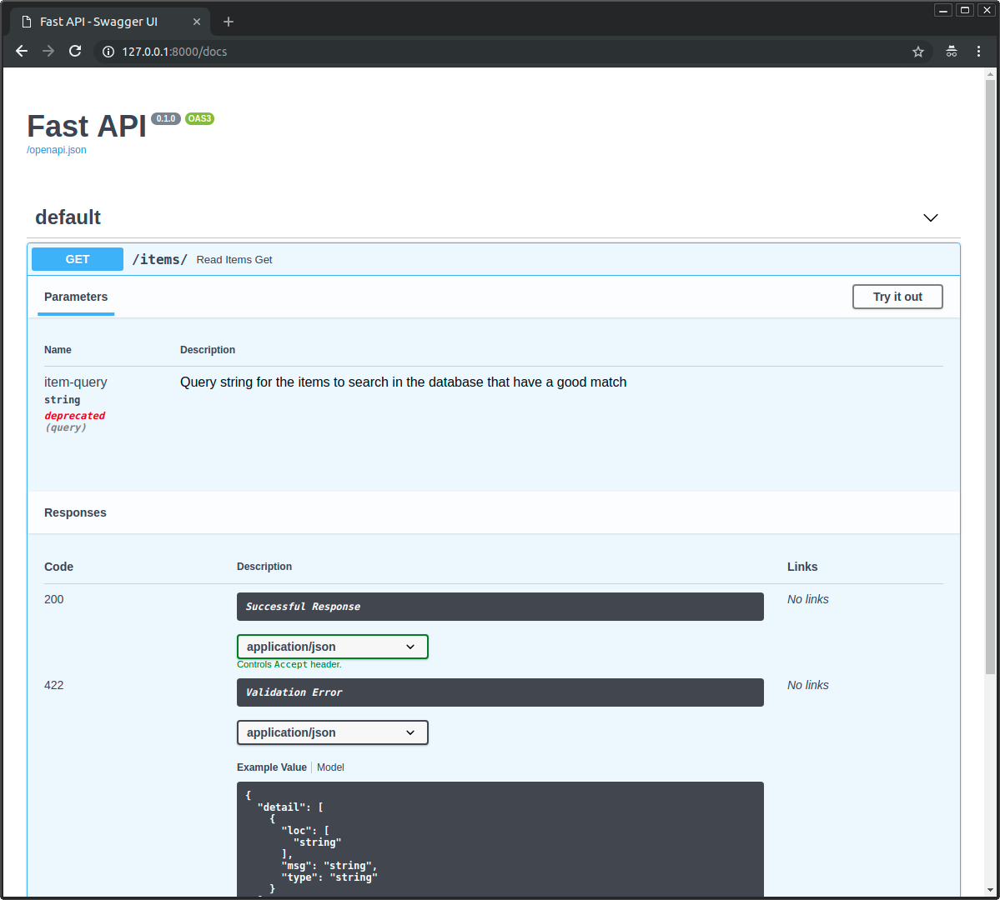
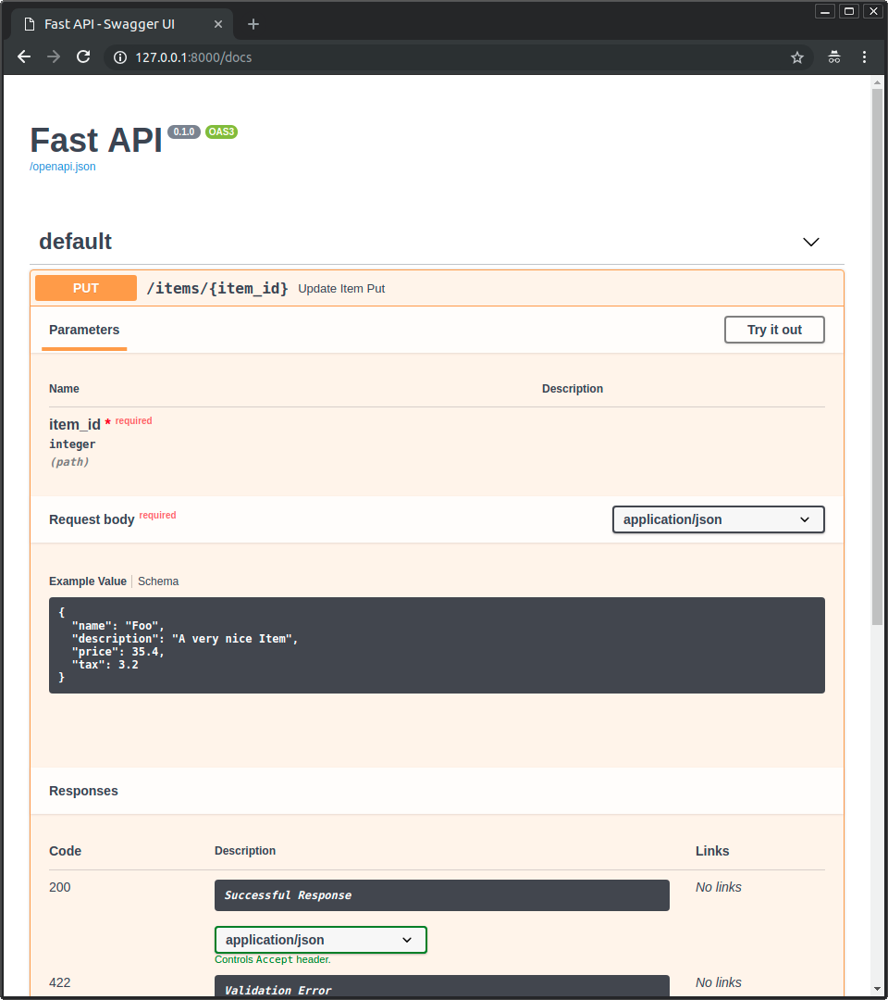
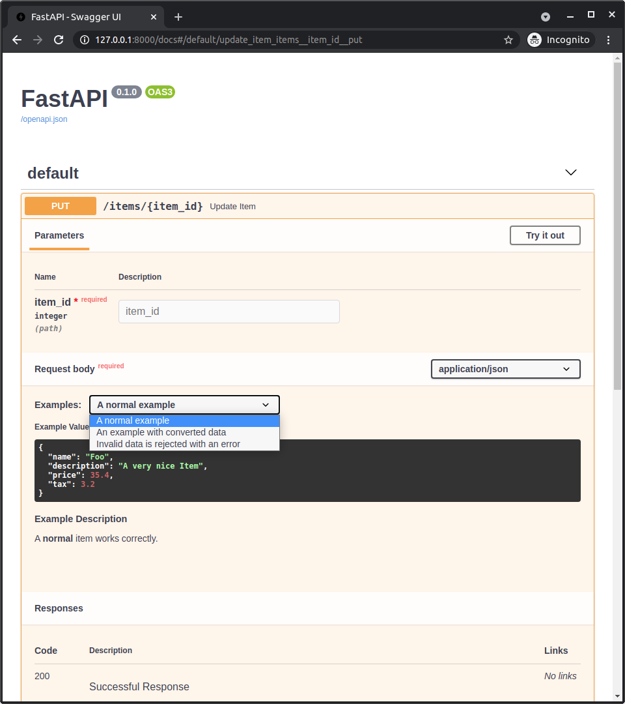
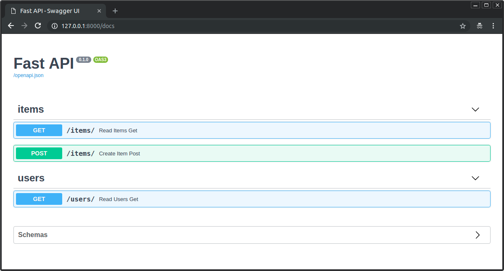
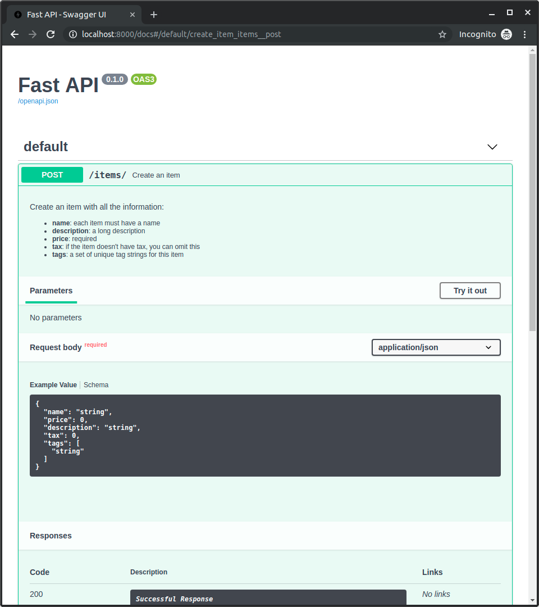
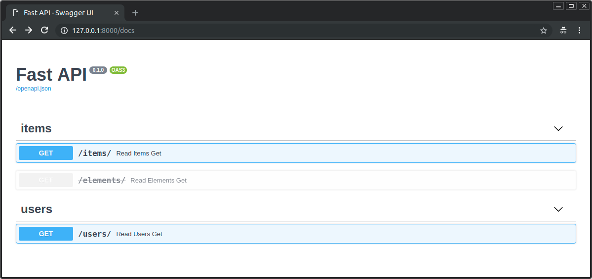

FastApi基础
本文向你一步一步地展示了FastApi的大多数特性
每个部分都逐渐建立在前一个部分的基础上, 但是文章中他们还是单独的主题,
这样你就可以直接转到任何特定的主题来解决你的特定API需求
本文还可做为未来的参考
运行代码
本文所有代码块都可以直接复制和使用（它们实际上是经过测试的 Python
文件）
运行任何示例时, 复制代码到main.py中,
并且使用uvicorn运行他们:
1 2 3 4 5 6 7 $ uvicorn main:app --reload INFO: Uvicorn running on http://127.0.0.1:8000 (Press CTRL+C to quit) INFO: Started reloader process [28720] INFO: Started server process [28722] INFO: Waiting for application startup. INFO: Application startup complete.
安装FastApi
首先我们来安装FastApi
你可能会希望安装FastApi并且安装所有的可选的依赖库:
1 pip install "fastapi[all]"
这当然也会安装uvicorn,
你能够使用这个服务器来运行你的代码
当然, 你也可以通过如下步骤进行最小安装
1 2 3 pip install fastapi pip install "uvicorn[standard]"
第一步
最简单的FastApi应用如下所示:
1 2 3 4 5 6 7 from fastapi import FastAPIapp = FastAPI() @app.get("/" async def root (): return {"message" : "Hello World" }
你可以通过uvicorn来启动他,
并且FastApi内置了Swagger和Redoc,
你可以在启动服务之后通过如下网址来访问到
1 2 http://127.0.0.1:8000/docs http://127.0.0.1:8000/redoc
OpenAPI
FastApi借助OpenAPI这个规范来定义API,
你可以直接下载到OpenAPI形式的接口文档.
扼要重述, 一步一步地
第一步: import FastAPI
1 2 3 4 5 6 7 > from fastapi import FastAPI app = FastAPI() @app.get("/" async def root (): return {"message" : "Hello World" }
FastAPI时一个Python的类,
并且他为你的API提供所有的功能
FastAPI是一个直接继承自Starlette的类
你能够在FastAPI中使用所有的Starlette的功能
第二步:
创建一个FastAPI实例
1 2 3 4 5 6 7 from fastapi import FastAPI> app = FastAPI() @app.get("/" async def root (): return {"message" : "Hello World" }
app时承载FastAPI实力的变量
他是你实现API的关键点
这个app也是uvicorn命令中引用的对象
1 uvicorn main:app --reload
第三步: 创建一个路径操作
“路径”这里指url中从第一个/分开的后半部分
比如面对如下的url:
1 https://example.com/items/foo
他的路径是
“路径”一般也会被称为“endpoint”(端点)或者“route”(路由)
“操作”是指一个HTTP“方法”, 比如:
POSTGETPUTDELETEOPTIONSHEADPATCHTRACE
在HTTP协议中，您可以使用这些“方法”中的一种（或多种）与每个路径进行通信
他们通常有一些含义:
POST: to create data.GET: to read data.PUT: to update data.DELETE: to delete data.
在OpenAPI中, 每一个HTTP方法被称为“操作”,
我们之后也会采用“操作”这个说法
定义一个路径操作装饰器
1 2 3 4 5 6 7 from fastapi import FastAPIapp = FastAPI() > @app.get("/" ) async def root (): return {"message" : "Hello World" }
@app.get("/")装饰器告诉FastAPI,
下方的函数负责处理满足以下条件的请求:
在Python中@something语法被称为装饰器
你可以将它放在一个函数的头部, 就像一个装饰的帽子
一个装饰器接受下方的函数, 并且基于他进行操作
当然, 相对于HTTP的“方法”, FastAPI也支持如下的装饰器
@app.post()@app.put()@app.delete()@app.options()@app.head()@app.patch()@app.trace()
你可以自由的使用他们, FastAPI不强制要求他们的用法
第四步: 定义一个路径操作函数
1 2 3 4 5 6 7 from fastapi import FastAPIapp = FastAPI() @app.get("/" > async def root (): return {"message" : "Hello World" }
这是一个Python的函数,
FastAPI会在接收到/路径的GET请求时调用它
当然你也可以定义一个普通的方法, 而不是async def
1 2 3 4 5 6 7 from fastapi import FastAPIapp = FastAPI() @app.get("/" def root (): return {"message" : "Hello World" }
这两种方式肯定是有区别的, 但是都能正常完成请求.
目前我只知道前者会被作为FastAPI进行优化时候依据
第五步: 返回值
1 2 3 4 5 6 7 from fastapi import FastAPIapp = FastAPI() @app.get("/" def root ():> return {"message" : "Hello World" }
你可以返回dict、list,
单独的值(比如int、str等)
你也可以返回一个Pydantic模型,
在接下来的内容中你也会看到这种操作
还有许多其他对象和模型将自动转换为 JSON（包括 ORM
等）。尝试使用您最喜欢的，它们很可能已经得到支持
总结一下
导入FastAPI
创建实例
写一个路径操作装饰器
写一个路径操作函数
运行开发服务器
路径参数
你可以通过Python的format方式同样的形式来定义路径参数(或者说变量)
1 2 3 4 5 6 7 from fastapi import FastAPIapp = FastAPI() > @app.get("/items/{item_id}" ) > async def read_item (item_id ): return {"item_id" : item_id}
路径参数item_id的值将会传入函数的参数item_id中
使用类型提示的路径参数
你能够在函数中声明路径参数的类型
1 2 3 4 5 6 7 from fastapi import FastAPIapp = FastAPI() @app.get("/items/{item_id}" > async def read_item (item_id: int ): return {"item_id" : item_id}
在这个情况下, item_id必须是一int类型的
如果这个时候传入的内容没办法解析为int, 就会抛出错误
数据转化
FastAPI会自动根据类型提示来尝试转化请求的参数
数据校验
但是如果在上面例子中输入了一个无法被转化int的参数,
你会收到如下的HTTP错误
1 2 3 4 5 6 7 8 9 10 11 12 13 14 { "detail" : [ { "type" : "int_parsing" , "loc" : [ "path" , "item_id" ] , "msg" : "Input should be a valid integer, unable to parse string as an integer" , "input" : "foo" , "url" : "https://errors.pydantic.dev/2.1/v/int_parsing" } ] }
请注意，该错误还清楚地说明了验证未通过的点。 这在开发和调试与 API
交互的代码时非常有用。
文档
你可以打开http://localhost:8000/docs来查看自动生成的,
可交互的API文档:

img
基于标准的好处, 替代文档
因为生成的方案是基于OpenAPI标准的, 有许多工具都可以兼容.
因此,
FastAPI自己又基于ReDoc提供了一份替代文档http://127.0.0.1:8000/redoc

img
Pydantic
所有的数据校验都是Pydantic在后台执行的,
所以你可以体验到它的所有优点.
你能够使用基础类型str、float、bool,
也可以使用许多其他的复杂类型
顺序的重要性
我们来看下方的代码
1 2 3 4 5 6 7 8 9 10 11 from fastapi import FastAPIapp = FastAPI() @app.get("/users/me" async def read_user_me (): return {"user_id" : "the current user" } @app.get("/users/{user_id}" async def read_user (user_id: str ): return {"user_id" : user_id}
一般来说, 出现以上的情况,
你的意思可能是在请求/users/me时,
调用read_user_me函数, 在其他的/user/*情况下,
你希望调用read_user函数.
但是显然, 在匹配规则上,
/users/{user_id}是可以匹配/users/me的.
此时如果你希望代码按照你的想法运行,
你必须要保证/users/me的声明必须在/users/{user_id}之前.
出于同样的思想, 你不可以重复定义一个路径, 比如下面的情况
1 2 3 4 5 6 7 8 9 10 11 from fastapi import FastAPIapp = FastAPI() @app.get("/users" async def read_users (): return ["Rick" , "Morty" ] @app.get("/users" async def read_users2 (): return ["Bean" , "Elfo" ]
此时, 只有第一个声明会生效
预定义值
如果你有一个接收路径参数的路径操作,
但是希望可以预先限制有效的路径参数值,
你可是使用Python的标准库Enum
构建一个Enum类
首先我们导入一个继承str和Enum的子类
通过继承str, FastAPI会知道值必须是字符串类型的,
并且会正确的渲染他
然后创建具有固定值的类属性，这些属性将是可用的有效值：
1 2 3 4 5 6 7 8 9 10 11 12 13 14 15 16 17 18 19 20 > from enum import Enum from fastapi import FastAPI> class ModelName (str , Enum): > alexnet = "alexnet" > resnet = "resnet" > lenet = "lenet" app = FastAPI() @app.get("/models/{model_name}" async def get_model (model_name: ModelName ): if model_name is ModelName.alexnet: return {"model_name" : model_name, "message" : "Deep Learning FTW!" } if model_name.value == "lenet" : return {"model_name" : model_name, "message" : "LeCNN all the images" } return {"model_name" : model_name, "message" : "Have some residuals" }
Enum是从3.4开始引入Python的
声明一个路径参数
使用你创造的Enum类来声明一个路径参数的类型
1 2 3 4 5 6 7 8 9 10 11 12 13 14 15 16 17 18 19 20 21 22 23 from enum import Enumfrom fastapi import FastAPIclass ModelName (str , Enum): alexnet = "alexnet" resnet = "resnet" lenet = "lenet" app = FastAPI() @app.get("/models/{model_name}" > async def get_model (model_name: ModelName ): if model_name is ModelName.alexnet: return {"model_name" : model_name, "message" : "Deep Learning FTW!" } if model_name.value == "lenet" : return {"model_name" : model_name, "message" : "LeCNN all the images" } return {"model_name" : model_name, "message" : "Have some residuals" }
查看文档
因为路径参数的可行值被预定义了, 交互文档会恰当的展示他们:

img
使用Python的枚举
路径参数的值将变为枚举成员
与枚举成员比较
你可以将其与你创造的枚举类型的成员进行比较:
1 2 3 4 5 6 7 8 9 10 11 12 13 14 15 16 17 18 19 20 from enum import Enumfrom fastapi import FastAPIclass ModelName (str , Enum): alexnet = "alexnet" resnet = "resnet" lenet = "lenet" app = FastAPI() @app.get("/models/{model_name}" async def get_model (model_name: ModelName ):> if model_name is ModelName.alexnet: return {"model_name" : model_name, "message" : "Deep Learning FTW!" } if model_name.value == "lenet" : return {"model_name" : model_name, "message" : "LeCNN all the images" } return {"model_name" : model_name, "message" : "Have some residuals" }
获取枚举值
你能够通过model_name.value来获取真实值
1 2 3 4 5 6 7 8 9 10 11 12 13 14 15 16 17 18 19 20 from enum import Enumfrom fastapi import FastAPIclass ModelName (str , Enum): alexnet = "alexnet" resnet = "resnet" lenet = "lenet" app = FastAPI() @app.get("/models/{model_name}" async def get_model (model_name: ModelName ): if model_name is ModelName.alexnet: return {"model_name" : model_name, "message" : "Deep Learning FTW!" } > if model_name.value == "lenet" : return {"model_name" : model_name, "message" : "LeCNN all the images" } return {"model_name" : model_name, "message" : "Have some residuals" }
当然, 你也可以通过ModelName.lenet.value获取值
返回一个枚举成员
你能够直接返回一个枚举成员,
甚至在一个JSON体内也可以(比如dict)
在返回他们到客户端之前, 他们将会被尝试转换为他们相应的类型
1 2 3 4 5 6 7 8 9 10 11 12 13 14 15 16 17 18 19 20 from enum import Enumfrom fastapi import FastAPIclass ModelName (str , Enum): alexnet = "alexnet" resnet = "resnet" lenet = "lenet" app = FastAPI() @app.get("/models/{model_name}" async def get_model (model_name: ModelName ): if model_name is ModelName.alexnet: > return {"model_name" : model_name, "message" : "Deep Learning FTW!" } if model_name.value == "lenet" : > return {"model_name" : model_name, "message" : "LeCNN all the images" } > return {"model_name" : model_name, "message" : "Have some residuals" }
此时在你的客户端, 你会收到如下返回信息:
1 2 3 4 { "model_name" : "alexnet" , "message" : "Deep Learning FTW!" }
包含路径的路径参数
当你有一个路径操作,
并且他匹配的路径为/files/{file_path}
但是, 你需要file_path他自己包含一个路径,
就像home/johnode/myfile.txt
所以,
这个时候url就变成/files/home/johndoe/myfile.txt
OpenAPI支持
OpenAPI不支持这种定一个包含路径的参数的操作,
因为这可能会导致难以测试和定义场景
但是你可以在FastAPI中实现,
这借助了Starlette的一个内部工具
此外, 即使你这么做了, 文档也会正常显示,
即使你没有添加任何文档告诉参数应该包含路径
路径转化
使用直接从 Starlette 提供的选项，您可以使用如下 URL
声明包含路径的路径参数：
在这个案例下, 参数的名字是file_path,
:path声明这个参数应该匹配任意多个路径
你可以参考下方的例子:
1 2 3 4 5 6 7 from fastapi import FastAPIapp = FastAPI() > @app.get("/files/{file_path:path}" ) async def read_file (file_path: str ): return {"file_path" : file_path}
总结一下
使用 FastAPI，通过使用简短、直观和标准的 Python
类型声明，您可以获得：
编辑器支持：错误检查、自动完成等。
数据“解析”
数据验证
API 注释和自动文档
而且你只需要声明一次。 与其他框架相比，这可能是 FastAPI
的主要明显优势（除了原始性能）。
Query参数
当你声明一个函数参数, 并且他在路径参数中没有对应时,
他们会自动地被解释为Query参数
1 2 3 4 5 6 7 8 9 from fastapi import FastAPIapp = FastAPI() fake_items_db = [{"item_name" : "Foo" }, {"item_name" : "Bar" }, {"item_name" : "Baz" }] @app.get("/items/" > async def read_item (skip: int = 0 , limit: int = 10 ): return fake_items_db[skip : skip + limit]
Query是一个键值对的集合, 跟在url的?后面,
由&分割
因为Query是url的一部分, 因此他们"自然"是字符串,
但是在你用Python的类型来声明他们, 他们会自动转化为那个类型,
并在这之间进行校验
默认情况
由于查询参数不是路径的固定部分，因此它们可以是可选的，并且可以具有默认值。
在上面的示例中，它们的默认值为 skip=0 和 limit=10
所以, 在以上的代码下, 以下的三种url是等效的
1 2 3 http://127.0.0.1:8000/items/ http://127.0.0.1:8000/items/?skip=0&limit=10 http://127.0.0.1:8000/items/?skip=20
可选参数
同样, 你可以声明一个可选的Query参数(通过指定他的默认值为None):
1 2 3 4 5 6 7 8 9 from fastapi import FastAPIapp = FastAPI() @app.get("/items/{item_id}" > async def read_item (item_id: str , q: str | None = None ): if q: return {"item_id" : item_id, "q" : q} return {"item_id" : item_id}
查询参数的类型转换
这里bool类型有一些特殊, 在下面这个例子中
1 2 3 4 5 6 7 8 9 10 11 12 13 14 from fastapi import FastAPIapp = FastAPI() @app.get("/items/{item_id}" > async def read_item (item_id: str , q: str | None = None , short: bool = False ): item = {"item_id" : item_id} if q: item.update({"q" : q}) if not short: item.update( {"description" : "This is an amazing item that has a long description" } ) return item
在这种情况下, 以下的五种请求是等效的:
1 2 3 4 5 http://127.0.0.1:8000/items/foo?short=1 http://127.0.0.1:8000/items/foo?short=True http://127.0.0.1:8000/items/foo?short=true http://127.0.0.1:8000/items/foo?short=on http://127.0.0.1:8000/items/foo?short=yes
此时, short会被转化为True,
并且以上五中情况的任何大小写变体都会被转化为True,
否则就会转化为False
多路径和Query参数
你能够同时声明多重路径参数和Query参数,
FastAPI知道怎么讲他们对应起来
并且你不需要按照任何特殊的顺序来声明他们
他们会自动的被匹配
1 2 3 4 5 6 7 8 9 10 11 12 13 14 15 16 from fastapi import FastAPIapp = FastAPI() @app.get("/users/{user_id}/items/{item_id}" async def read_user_item (> user_id: int , item_id: str , q: str | None = None , short: bool = False item = {"item_id" : item_id, "owner_id" : user_id} if q: item.update({"q" : q}) if not short: item.update( {"description" : "This is an amazing item that has a long description" } ) return item
必须的Query参数
当你声明了一个参数的默认值(包括None),
那么他就不是必须的参数
如果你想要声明一个必要的参数, 那么你可以不指定任何默认值,
然后你就得到了你想要的
1 2 3 4 5 6 7 8 9 from fastapi import FastAPIapp = FastAPI() @app.get("/items/{item_id}" > async def read_user_item (item_id: str , needy: str ): item = {"item_id" : item_id, "needy" : needy} return item
此时item_id和needy都是必须参数,
如果你进行如下请求
1 http://127.0.0.1:8000/items/foo-item
然后你就会收到如下报错
1 2 3 4 5 6 7 8 9 10 11 12 13 14 { "detail" : [ { "type" : "missing" , "loc" : [ "query" , "needy" ] , "msg" : "Field required" , "input" : null , "url" : "https://errors.pydantic.dev/2.1/v/missing" } ] }
是的你同时也可以结合Enum来使用Query参数
请求体
请求体是指客户端传递给你的数据, 响应体是指你返回给客户端的数据
API几乎总是必须返回客户端一个响应体,
而客户端并不总是需要发送请求体
为了声明一个请求体, 你需要使用Pydantic模型
导入Pydantic的BaseModel
首先, 你需要导入Pydantic的BaseModel
1 2 3 4 5 6 7 8 9 10 11 12 13 14 from fastapi import FastAPI> from pydantic import BaseModel class Item (BaseModel ): name: str description: str | None = None price: float tax: float | None = None app = FastAPI() @app.post("/items/" async def create_item (item: Item ): return item
构建数据模型
你可以继承BaseModel并声明一个数据模型的类
1 2 3 4 5 6 7 8 9 10 11 12 13 14 from fastapi import FastAPIfrom pydantic import BaseModel> class Item (BaseModel ): > name: str > description: str | None = None > price: float > tax: float | None = None app = FastAPI() @app.post("/items/" async def create_item (item: Item ): return item
和Query参数类似, 如果数据模型的某个属性有默认值,
那么这个属性(或者说参数)就不是必须的
声明参数
与声明Query参数一样,
你可以在你的路径操作函数中声明一个数据模型参数
1 2 3 4 5 6 7 8 9 10 11 12 13 14 from fastapi import FastAPIfrom pydantic import BaseModelclass Item (BaseModel ): name: str description: str | None = None price: float tax: float | None = None app = FastAPI() @app.post("/items/" > async def create_item (item: Item ): return item
带来了什么
运行上述代码, FastAPI将会:
解析请求体为JSON数据
转换数据类型
验证数据
将收到的数据压入参数item中
为你的数据模型生成一个JSON结构, 如果你在项目中声明了他们,
你就可以在你的项目的任何地方使用它
这些结构会在生成时成为OpenAPI结构的一部分,
并且自动地生成响应的文档
使用模型
学过Python的你一定知道, 说是模型, 其实就是一个Python的类,
你当然可以通过instance.attribute的方式访问到模型实例内部的属性
1 2 3 4 5 6 7 8 9 10 11 12 13 14 15 16 17 18 from fastapi import FastAPIfrom pydantic import BaseModelclass Item (BaseModel ): name: str description: str | None = None price: float tax: float | None = None app = FastAPI() @app.post("/items/" async def create_item (item: Item ): item_dict = item.dict () if item.tax: > price_with_tax = item.price + item.tax item_dict.update({"price_with_tax" : price_with_tax}) return item_dict
请求体+路径参数+Query参数
你可以同时声明请求体、路径参数、Query参数,
FastAPI将会自动地把他们放到对应的位置
1 2 3 4 5 6 7 8 9 10 11 12 13 14 15 16 17 from fastapi import FastAPIfrom pydantic import BaseModelclass Item (BaseModel ): name: str description: str | None = None price: float tax: float | None = None app = FastAPI() @app.put("/items/{item_id}" >async def create_item (item_id: int , item: Item, q: str | None = None ): result = {"item_id" : item_id, **item.dict ()} if q: result.update({"q" : q}) return result
函数的参数静按照下面的顺序解析:
如果这个参数在路径参数中被声明, 那么他就是路径参数
如果参数是一个单独的类型(比如int, str等),
那么他会被当做Query参数解析
如果参数被声明为一个Pydantic模型,
那么他会被当做请求体
如果没有Pydantic
其实, 你也可以不依靠Pydantic,
即使这样你也是能获取到请求体的. 如果你对这部分感兴趣, 请参与此处
Query参数和字符串校验
FastAPI允许你声明附加信息, 并且据此验证你的参数, 比如:
1 2 3 4 5 6 7 8 9 10 from fastapi import FastAPIapp = FastAPI() @app.get("/items/" > async def read_items (q: str | None = None ): results = {"items" : [{"item_id" : "Foo" }, {"item_id" : "Bar" }]} if q: results.update({"q" : q}) return results
Python借助str | None = None知道了,
q这个参数可以是str类型的,
也可以是None,
如果请求的参数不满足这个条件Python会通过校验发现并返回错误信息,
这只是基础的校验
额外验证
设想一下, 你可能会面对这样的需求:
你希望q这个参数是可选的参数,
但是如果有q这个参数被传递,
你还希望他的长度能够限制在50以内(字符串长度)
导入Query和Annotated
为了实现这个需求, 你需要导入:
从fastapi中导入Query
从typing中导入Annotated
1 2 3 4 5 6 7 8 9 10 11 12 from typing import Annotatedfrom fastapi import FastAPI, Queryapp = FastAPI() @app.get("/items/" > async def read_items (q: Annotated[str | None , Query(max_length=50 )] = None ): results = {"items" : [{"item_id" : "Foo" }, {"item_id" : "Bar" }]} if q: results.update({"q" : q}) return results
FastAPI从0.95.0开始支持了Annotated
在q的类型中使用Annotated
如基础篇所说, Annotated的作用是给你的参数添加元数据
现在是时候在FastAPI中使用它了
我们有这样的类型提示:
现在我们可以用Annotated来包裹他:
1 q: Annotated[str | None ] = None
以上两种写法是等价的, 接下来我们来看看他们怎么变得不一样,
以及Annotated的作用
给q参数的Annotated中追加Query
现在我们有了一个压入元数据的地方(Annotated中),
我们添加Query到其中,
并且设置参数的max_length为50
1 2 3 4 5 6 7 8 9 10 11 12 from typing import Annotatedfrom fastapi import FastAPI, Queryapp = FastAPI() @app.get("/items/" > async def read_items (q: Annotated[str | None , Query(max_length=50 )] = None ): results = {"items" : [{"item_id" : "Foo" }, {"item_id" : "Bar" }]} if q: results.update({"q" : q}) return results
通过将Query(max_length=50)写入Annotated内,
我们告诉了FastAPI我们希望从Query参数中提取这个数值,
并且我们还希望执行一个额外的参数校验
现在FastAPI会这么做:
验证数据是否符合最大长度为50的约束
如果没有通过验证, 向客户端返回一个异常信息
在文档中展示这个约束
在Query中指定默认值(一种老方式)
以前版本的 FastAPI（0.95.0 之前）要求你使用 Query
作为参数的默认值，而不是把它放在 Annotated
中，你很有可能会看到使用它的代码，所以我会向你解释。
在下方的代码中, 你讲看到 Query 作为函数参数的默认值,
并设置了max_length为50的约束
1 2 3 4 5 6 7 8 9 10 from fastapi import FastAPI, Queryapp = FastAPI() @app.get("/items/" > async def read_items (q: str | None = Query(default=None , max_length=50 ) ): results = {"items" : [{"item_id" : "Foo" }, {"item_id" : "Bar" }]} if q: results.update({"q" : q}) return results
所以, 我们又得到一种等价形式的集合:
1 2 3 4 q: Union[str, None] = Query(default=None) q: Union[str, None] = None q: str | None = Query(default=None) q: str | None = None
是的, 他们是四种等价的形式
要说有什么不同,
那就是在q: str | None = Query(default=None)形势下,
q参数被明确声明为了一个Query参数
在Annotated中使用Query时的默认值
你要有一种意识:在Annotated中使用Query时,
你不能使用Query的default参数
实际上你可以这么做, 并且代码也会正常运行,
但是这会带来编码的不一致性
Annotated的优势现在Annotated的写法成为了官方推荐. 它有着许多优势:
函数的默认值就是服务参数的默认值, 这更符合Pythoner的直觉
你可以在没有FastAPI的地方正常调用这个函数
因为Annotated能够为参数添加多个元数据,
所以你还可以同时使用别的工具
追加更多的校验
相对于max_length,
你还可以指定min_length
1 2 3 4 5 6 7 8 9 10 11 12 13 14 from typing import Annotatedfrom fastapi import FastAPI, Queryapp = FastAPI() @app.get("/items/" async def read_items (> q: Annotated[str | None , Query(min_length=3 , max_length=50 )] = None results = {"items" : [{"item_id" : "Foo" }, {"item_id" : "Bar" }]} if q: results.update({"q" : q}) return results
添加正则表达式
你可以定义一个正则表达式来约束参数
1 2 3 4 5 6 7 8 9 10 11 12 13 14 15 16 from typing import Annotatedfrom fastapi import FastAPI, Queryapp = FastAPI() @app.get("/items/" async def read_items ( q: Annotated[ > str | None , Query(min_length=3 , max_length=50 , pattern="^fixedquery$" ) ] = None , results = {"items" : [{"item_id" : "Foo" }, {"item_id" : "Bar" }]} if q: results.update({"q" : q}) return results
当然,
你可以不使用Annotated而只使用Query来实现这种效果,
但是更推荐结合Query使用
此特定正则表达式模式检查接收到的参数值：
^：以下字符开头，之前没有字符。
fixedQuery：具有确切的值 fixedQuery。
$：到此结束，fixedquery后不再有字符。
Pydantic v1
regex而不是pattern在Pydanticv2版本之前,
FastAPI0.100.0版本之前,
我们需要调用reges来使用正则表达式,
而不是pattern
1 2 3 4 5 6 7 8 9 10 11 12 13 14 15 16 from typing import Annotatedfrom fastapi import FastAPI, Queryapp = FastAPI() @app.get("/items/" async def read_items ( q: Annotated[ > str | None , Query(min_length=3 , max_length=50 , regex="^fixedquery$" ) ] = None , results = {"items" : [{"item_id" : "Foo" }, {"item_id" : "Bar" }]} if q: results.update({"q" : q}) return results
省略号
之前, 我们可以通过不声明参数的默认值来指定一个参数是必须的,
而我们还有一种更加显示的方式来达成这种效果, 即...
1 2 3 4 5 6 7 8 9 10 11 12 from typing import Annotatedfrom fastapi import FastAPI, Queryapp = FastAPI() @app.get("/items/" > async def read_items (q: Annotated[str , Query(min_length=3 )] = ... ): results = {"items" : [{"item_id" : "Foo" }, {"item_id" : "Bar" }]} if q: results.update({"q" : q}) return results
必须的None
现在你可以声明一个必须的参数,
而且这个参数还可以接受None值, 这意味着,
客户端必须向后端传递某个参数, 即使他的值是None
1 2 3 4 5 6 7 8 9 10 11 12 from typing import Annotatedfrom fastapi import FastAPI, Queryapp = FastAPI() @app.get("/items/" async def read_items (q: Annotated[str | None , Query(min_length=3 )] = ... ): results = {"items" : [{"item_id" : "Foo" }, {"item_id" : "Bar" }]} if q: results.update({"q" : q}) return results
Query数组型参数/多值参数
你可以通过如下方式定义一个参数来接受Query中的数组数据
1 2 3 4 5 6 7 8 9 10 from typing import Annotatedfrom fastapi import FastAPI, Queryapp = FastAPI() @app.get("/items/" > async def read_items (q: Annotated[list [str ] | None , Query(None ): query_items = {"q" : q} return query_items
然后, 我们就可以正常接受这个请求的url了
1 http://localhost:8000/items/?q=foo&q=bar
Query中数组型参数/多值参数的默认值
1 2 3 4 5 6 7 8 9 10 from typing import Annotatedfrom fastapi import FastAPI, Queryapp = FastAPI() @app.get("/items/" > async def read_items (q: Annotated[list [str ], Query("foo" , "bar" ] ): query_items = {"q" : q} return query_items
当然, 你可以只使用list, 而不是list[str],
这样FastAPI就不会对其内部元素执行校验
声明更多的元数据
你可以为参数添加更多的信息， 这些信息也可以被升成到OpenAPI中，
并且文档中也会有对应的表现
比如， 你可以添加title
1 2 3 4 5 6 7 8 9 10 11 12 13 14 from typing import Annotatedfrom fastapi import FastAPI, Queryapp = FastAPI() @app.get("/items/" async def read_items (> q: Annotated[str | None , Query(title="Query string" , min_length=3 )] = None results = {"items" : [{"item_id" : "Foo" }, {"item_id" : "Bar" }]} if q: results.update({"q" : q}) return results
也可以添加一个description
1 2 3 4 5 6 7 8 9 10 11 12 13 14 15 16 17 18 19 20 21 from typing import Annotatedfrom fastapi import FastAPI, Queryapp = FastAPI() @app.get("/items/" async def read_items ( q: Annotated[ str | None , Query( title="Query string" , > description="Query string for the items to search in the database that have a good match" , min_length=3 , ), ] = None , results = {"items" : [{"item_id" : "Foo" }, {"item_id" : "Bar" }]} if q: results.update({"q" : q}) return results
参数别名
设想一下, 有一个参数, 他在客户端叫做item-query,
就像:
1 http://127.0.0.1:8000/items/?item-query=foobaritems
很明显, 这个变量名在Python中是非法的,
那面对这种参数我们要怎么办呢?
1 2 3 4 5 6 7 8 9 10 11 12 13 from typing import Annotatedfrom fastapi import FastAPI, Queryapp = FastAPI() @app.get("/items/" > async def read_items (q: Annotated[str | None , Query(alias="item-query" )] = None ): results = {"items" : [{"item_id" : "Foo" }, {"item_id" : "Bar" }]} if q: results.update({"q" : q}) return results
是的, 通过alias可是实现这个目的
弃用参数
由于迭代的缘故, 你的API可能在以前的版本会接受某个参数,
但是在新版本的API中, 你选择弃用了他. 但是现在由于仍然有客户端在使用它,
因此你还需要再OpenAPI和文档中他把展示出来并且告诉开发者他已经被弃用了
1 2 3 4 5 6 7 8 9 10 11 12 13 14 15 16 17 18 19 20 21 22 23 24 25 26 from typing import Annotatedfrom fastapi import FastAPI, Queryapp = FastAPI() @app.get("/items/" async def read_items ( q: Annotated[ str | None , Query( alias="item-query" , title="Query string" , description="Query string for the items to search in the database that have a good match" , min_length=3 , max_length=50 , pattern="^fixedquery$" , > deprecated=True , ), ] = None , results = {"items" : [{"item_id" : "Foo" }, {"item_id" : "Bar" }]} if q: results.update({"q" : q}) return results
这样, 开发者就可以在文档中看到:

img
从OpenAPI中排除
有时候你会为你的服务做一些方便检验的参数,
但是这个参数不应该被客户端使用, 即不应该在文档中展示出来
1 2 3 4 5 6 7 8 9 10 11 12 13 14 15 from typing import Annotatedfrom fastapi import FastAPI, Queryapp = FastAPI() @app.get("/items/" async def read_items (> hidden_query: Annotated[str | None , Query(include_in_schema=False )] = None if hidden_query: return {"hidden_query" : hidden_query} else : return {"hidden_query" : "Not found" }
总结一下
本章中, 你为你的参数声明了额外的验证和元数据
比如通用的验证和元数据:
aliastitledescriptiondeprecated
又比如字符串验证:
min_lengthmax_lengthpattern
通过这些例子, 我们简单展示了常用的通用的验证和元数据,
又展示了str的常见验证
路径参数和数值校验
与使用 Query 为查询参数声明更多验证和元数据的方式相同，也可以使用
Path 为路径参数声明相同类型的验证和元数据。
导入Path
想对于Query, 路径参数需要导入Path
1 2 3 4 5 6 7 8 9 10 11 12 13 14 15 16 from typing import Annotated> from fastapi import FastAPI, Path, Query app = FastAPI() @app.get("/items/{item_id}" async def read_items ( item_id: Annotated[int , Path(title="The ID of the item to get" )], q: Annotated[str | None , Query(alias="item-query" )] = None , results = {"item_id" : item_id} if q: results.update({"q" : q}) return results
声明元数据
和Query对应, 你也可以为路径参数添加元数据
1 2 3 4 5 6 7 8 9 10 11 12 13 14 15 from typing import Annotatedfrom fastapi import FastAPI, Path, Queryapp = FastAPI() @app.get("/items/{item_id}" async def read_items (> item_id: Annotated[int , Path(title="The ID of the item to get" )], q: Annotated[str | None , Query(alias="item-query" )] = None , results = {"item_id" : item_id} if q: results.update({"q" : q}) return results
路径参数始终是必需的，因为它必须是路径的一部分。
所以，你应该用...将其标记为必需。
尽管如此，即使您将其声明为 None
或设置了默认值，它也不会影响任何内容，它仍然始终是必需的。
根据需要对参数进行排序
有时候你会为一个参数赋予默认值, 但是在有多个参数的情况下, 你需要注意:
在Python的函数中, 有默认值的参数应该在没有默认值的参数后面声明
所以, 如果你因为某些原因不能使用Annotated,
那么你就要额外注意顺序问题了:
1 2 3 4 5 6 7 8 9 10 from fastapi import FastAPI, Pathapp = FastAPI() @app.get("/items/{item_id}" > async def read_items (q: str , item_id: int = Path(title="The ID of the item to get" ) ): results = {"item_id" : item_id} if q: results.update({"q" : q}) return results
但是当你使用Annotated时, 你就不需要担心这个问题
1 2 3 4 5 6 7 8 9 10 11 12 13 14 from typing import Annotatedfrom fastapi import FastAPI, Pathapp = FastAPI() @app.get("/items/{item_id}" async def read_items (> q: str , item_id: Annotated[int , Path(title="The ID of the item to get" )] results = {"item_id" : item_id} if q: results.update({"q" : q}) return results
数值验证: 大于等于
很多情况下, 你会需要为数值类型的参数声明约束
假设一个情况, item_id这个参数必须大于等于1,
那么我们就可以这么写
1 2 3 4 5 6 7 8 9 10 11 12 13 14 from typing import Annotatedfrom fastapi import FastAPI, Pathapp = FastAPI() @app.get("/items/{item_id}" async def read_items (> item_id: Annotated[int , Path(title="The ID of the item to get" , ge=1 )], q: str results = {"item_id" : item_id} if q: results.update({"q" : q}) return results
ge=1
数值验证: 大于 且 小于等于
1 2 3 4 5 6 7 8 9 10 11 12 13 14 15 from typing import Annotatedfrom fastapi import FastAPI, Pathapp = FastAPI() @app.get("/items/{item_id}" async def read_items (> item_id: Annotated[int , Path(title="The ID of the item to get" , gt=0 , le=1000 )], q: str , results = {"item_id" : item_id} if q: results.update({"q" : q}) return results
gt=0, le=1000
数值验证: 浮点型, 大于, 小于
现在我们想声明一个浮点型的, 在0到10.5之间的参数
1 2 3 4 5 6 7 8 9 10 11 12 13 14 15 16 17 from typing import Annotatedfrom fastapi import FastAPI, Path, Queryapp = FastAPI() @app.get("/items/{item_id}" async def read_items ( *, item_id: Annotated[int , Path(title="The ID of the item to get" , ge=0 , le=1000 )], q: str , > size: Annotated[float , Query(gt=0 , lt=10.5 )], results = {"item_id" : item_id} if q: results.update({"q" : q}) return results
总结一下
这一章， 我们简单的介绍了常见的数值类型的参数的验证方法：
请求体-多参数
现在我们了解了如何使用Path, Query和请求体,
那么我们现在来看看一些高级用法
混合Path,
Query和请求体参数
首先, 我们当然可以自由的混用他们:
1 2 3 4 5 6 7 8 9 10 11 12 13 14 15 16 17 18 19 20 21 22 23 24 25 from typing import Annotatedfrom fastapi import FastAPI, Pathfrom pydantic import BaseModelapp = FastAPI() class Item (BaseModel ): name: str description: str | None = None price: float tax: float | None = None @app.put("/items/{item_id}" async def update_item (> item_id: Annotated[int , Path(title="The ID of the item to get" , ge=0 , le=1000 )], > q: str | None = None , > item: Item | None = None , results = {"item_id" : item_id} if q: results.update({"q" : q}) if item: results.update({"item" : item}) return results
多请求体参数
在上面的例子中, 路径操作函数会期待一个JSON请求体,
并且他要符合Item, 比如
1 2 3 4 5 6 { "name" : "Foo" , "description" : "The pretender" , "price" : 42.0 , "tax" : 3.2 }
你也可以请求多个请求体参数, 比如:
1 2 3 4 5 6 7 8 9 10 11 12 13 14 15 16 17 18 19 from fastapi import FastAPIfrom pydantic import BaseModelapp = FastAPI() class Item (BaseModel ): name: str description: str | None = None price: float tax: float | None = None class User (BaseModel ): username: str full_name: str | None = None @app.put("/items/{item_id}" > async def update_item (item_id: int , item: Item, user: User ): results = {"item_id" : item_id, "item" : item, "user" : user} return results
此时, FastAPI就会期待这样的请求体:
1 2 3 4 5 6 7 8 9 10 11 12 { "item" : { "name" : "Foo" , "description" : "The pretender" , "price" : 42.0 , "tax" : 3.2 }, "user" : { "username" : "dave" , "full_name" : "Dave Grohl" } }
请求体中的单值
与Query和Path一样,
我们也可以从Body中抽出参数
例如, 我们简单的拓展一下以上的请求体
1 2 3 4 5 6 7 8 9 10 11 12 13 { "item" : { "name" : "Foo" , "description" : "The pretender" , "price" : 42.0 , "tax" : 3.2 } , "user" : { "username" : "dave" , "full_name" : "Dave Grohl" } , "importance" : 5 }
那么, 我们如何从其中拿到importance这个参数呢?
1 2 3 4 5 6 7 8 9 10 11 12 13 14 15 16 17 18 19 20 21 22 23 24 25 26 from typing import Annotatedfrom fastapi import Body, FastAPIfrom pydantic import BaseModelapp = FastAPI() class Item (BaseModel ): name: str description: str | None = None price: float tax: float | None = None class User (BaseModel ): username: str full_name: str | None = None @app.put("/items/{item_id}" async def update_item (> item_id: int , item: Item, user: User, importance: Annotated[int , Body( results = {"item_id" : item_id, "item" : item, "user" : user, "importance" : importance} return results
因为所有的单值参数都会被默认解释为Query参数,
因此你必须显示的从Body中获取
多请求体参数和Query
当然，除了任何正文参数之外，您还可以随时声明其他查询参数。
默认情况下，单数值都会被解释为Query参数，因此您不必显式添加查询，只需执行以下操作：
1 2 3 4 5 6 7 8 9 10 11 12 13 14 15 16 17 18 19 20 21 22 23 24 25 26 27 28 29 30 from typing import Annotatedfrom fastapi import Body, FastAPIfrom pydantic import BaseModelapp = FastAPI() class Item (BaseModel ): name: str description: str | None = None price: float tax: float | None = None class User (BaseModel ): username: str full_name: str | None = None @app.put("/items/{item_id}" async def update_item ( *, item_id: int , item: Item, user: User, importance: Annotated[int , Body(gt=0 )], > q: str | None = None , results = {"item_id" : item_id, "item" : item, "user" : user, "importance" : importance} if q: results.update({"q" : q}) return results
别忘了, 参数的解析, 路径参数是优先于Query参数的
嵌入式单请求体参数
假设现在请求体力只有一个item请求体参数,
并且你有一个对应于item的Pydantic模型,
就像:
1 2 3 4 5 6 7 8 { "item" : { "name" : "Foo" , "description" : "The pretender" , "price" : 42.0 , "tax" : 3.2 } }
你会希望直接拿到内一层, 而不是全部, 这时候你可以这么做
1 2 3 4 5 6 7 8 9 10 11 12 13 14 15 16 17 from typing import Annotatedfrom fastapi import Body, FastAPIfrom pydantic import BaseModelapp = FastAPI() class Item (BaseModel ): name: str description: str | None = None price: float tax: float | None = None @app.put("/items/{item_id}" > async def update_item (item_id: int , item: Annotated[Item, Body(embed=True )] ): results = {"item_id" : item_id, "item" : item} return results
Body(embed=True)
请求体-Fields
就和Query和Path参数都可以添加额外的验证一样,
Body也可以通过Pydantic的Field
导入Field
1 2 3 4 5 6 7 8 9 10 11 12 13 14 15 16 17 18 19 from typing import Annotatedfrom fastapi import Body, FastAPI> from pydantic import BaseModel, Field app = FastAPI() class Item (BaseModel ): name: str description: str | None = Field( default=None , title="The description of the item" , max_length=300 ) price: float = Field(gt=0 , description="The price must be greater than zero" ) tax: float | None = None @app.put("/items/{item_id}" async def update_item (item_id: int , item: Annotated[Item, Body(embed=True )] ): results = {"item_id" : item_id, "item" : item} return results
注意下, 跟Query和Path不一样,
你需要在Pydantic中导入Filed
声明模型属性
你可以在模型属性上使用Field
1 2 3 4 5 6 7 8 9 10 11 12 13 14 15 16 17 18 19 20 21 from typing import Annotatedfrom fastapi import Body, FastAPIfrom pydantic import BaseModel, Fieldapp = FastAPI() class Item (BaseModel ): name: str > description: str | None = Field( > default=None , title="The description of the item" , max_length=300 > ) > price: float = Field(gt=0 , description="The price must be greater than zero" ) tax: float | None = None @app.put("/items/{item_id}" async def update_item (item_id: int , item: Annotated[Item, Body(embed=True )] ): results = {"item_id" : item_id, "item" : item} return results
Field可以和Query,
Path和Body一样使用
请求体-嵌套模型
借助 FastAPI，您可以定义、验证、记录和使用任意深度嵌套的模型（感谢
Pydantic）。
列表字段
您可以将属性定义为子类型。例如，Python 列表
1 2 3 4 5 6 7 8 9 10 11 12 13 14 15 16 from fastapi import FastAPIfrom pydantic import BaseModelapp = FastAPI() class Item (BaseModel ): name: str description: str | None = None price: float tax: float | None = None > tags: list = [] @app.put("/items/{item_id}" async def update_item (item_id: int , item: Item ): results = {"item_id" : item_id, "item" : item} return results
伴随类型参数的列表字段
Python 有一种特定的方式来声明具有内部类型或“类型参数”的列表：
1 2 3 4 5 6 7 8 9 10 11 12 13 14 15 16 17 18 from typing import Union from fastapi import FastAPIfrom pydantic import BaseModelapp = FastAPI() class Item (BaseModel ): name: str description: Union [str , None ] = None price: float tax: Union [float , None ] = None > tags: list [str ] = [] @app.put("/items/{item_id}" async def update_item (item_id: int , item: Item ): results = {"item_id" : item_id, "item" : item} return results
集合类型
1 2 3 4 5 6 7 8 9 10 11 12 13 14 15 16 from fastapi import FastAPIfrom pydantic import BaseModelapp = FastAPI() class Item (BaseModel ): name: str description: str | None = None price: float tax: float | None = None > tags: set [str ] = set () @app.put("/items/{item_id}" async def update_item (item_id: int , item: Item ): results = {"item_id" : item_id, "item" : item} return results
嵌套模型
FastAPI支持嵌套的模型
1 2 3 4 5 6 7 8 9 10 11 12 13 14 15 16 17 18 19 20 21 22 from fastapi import FastAPIfrom pydantic import BaseModelapp = FastAPI() class Image (BaseModel ): url: str name: str class Item (BaseModel ): name: str description: str | None = None price: float tax: float | None = None tags: set [str ] = set () > image: Image | None = None @app.put("/items/{item_id}" async def update_item (item_id: int , item: Item ): results = {"item_id" : item_id, "item" : item} return results
这意味着, FastAPI希望收到如下形式的请求体
1 2 3 4 5 6 7 8 9 10 11 { "name" : "Foo" , "description" : "The pretender" , "price" : 42.0 , "tax" : 3.2 , "tags" : ["rock" , "metal" , "bar" ], "image" : { "url" : "http://example.com/baz.jpg" , "name" : "The Foo live" } }
特殊的类型和校验
在前后端通讯的时候, 可能会传输一些特殊类型的字符串,
比如url类型的数据
如果你想知道别的FastAPI支持的特殊数据类型, 请参考这篇文章
我们就那url来说, 我们可以这样:
1 2 3 4 5 6 7 8 9 10 11 12 13 14 15 16 17 18 19 20 21 from fastapi import FastAPI>from pydantic import BaseModel, HttpUrl app = FastAPI() class Image (BaseModel ):> url: HttpUrl name: str class Item (BaseModel ): name: str description: str | None = None price: float tax: float | None = None tags: set [str ] = set () image: Image | None = None @app.put("/items/{item_id}" async def update_item (item_id: int , item: Item ): results = {"item_id" : item_id, "item" : item} return results
带有子模型的列表属性
符合直觉的, 你也可以指定列表属性中带有自定义的子模型类型
1 2 3 4 5 6 7 8 9 10 11 12 13 14 15 16 17 18 19 20 21 22 23 24 from fastapi import FastAPIfrom pydantic import BaseModel, HttpUrlapp = FastAPI() class Image (BaseModel ): url: HttpUrl name: str class Item (BaseModel ): name: str description: str | None = None price: float tax: float | None = None tags: set [str ] = set () > images: list [Image] | None = None @app.put("/items/{item_id}" async def update_item (item_id: int , item: Item ): results = {"item_id" : item_id, "item" : item} return results
这意味着FastAPI期待这样的请求体
1 2 3 4 5 6 7 8 9 10 11 12 13 14 15 16 17 18 19 20 21 { "name" : "Foo" , "description" : "The pretender" , "price" : 42.0 , "tax" : 3.2 , "tags" : [ "rock" , "metal" , "bar" ] , "images" : [ { "url" : "http://example.com/baz.jpg" , "name" : "The Foo live" } , { "url" : "http://example.com/dave.jpg" , "name" : "The Baz" } ] }
深度嵌套模型
你可以肆无忌惮的嵌套模型
1 2 3 4 5 6 7 8 9 10 11 12 13 14 15 16 17 18 19 20 21 22 23 24 25 26 27 from fastapi import FastAPIfrom pydantic import BaseModel, HttpUrlapp = FastAPI() class Image (BaseModel ): url: HttpUrl name: str class Item (BaseModel ): name: str description: str | None = None price: float tax: float | None = None tags: set [str ] = set () > images: list [Image] | None = None class Offer (BaseModel ): name: str description: str | None = None price: float > items: list [Item] @app.post("/offers/" async def create_offer (offer: Offer ): return offer
纯列表的请求体
如果期望的 JSON 正文的顶级值是 JSON 数组（Python
列表），则可以在函数的参数中声明类型，与 Pydantic 模型中的类型相同：
1 2 3 4 5 6 7 8 9 10 11 12 from fastapi import FastAPIfrom pydantic import BaseModel, HttpUrlapp = FastAPI() class Image (BaseModel ): url: HttpUrl name: str @app.post("/images/multiple/" > async def create_multiple_images (images: list [Image] ): return images
字典请求体
1 2 3 4 5 6 7 from fastapi import FastAPIapp = FastAPI() @app.post("/index-weights/" > async def create_index_weights (weights: dict [int , float ] ): return weights
声明示例数据
你能够声明示例来供客户端参考
在Pydantic模型中抽离JSON结构的数据
1 2 3 4 5 6 7 8 9 10 11 12 13 14 15 16 17 18 19 20 21 22 23 24 25 26 27 28 from fastapi import FastAPIfrom pydantic import BaseModelapp = FastAPI() class Item (BaseModel ): name: str description: str | None = None price: float tax: float | None = None > model_config = { > "json_schema_extra" : { > "examples" : [ > { > "name" : "Foo" , > "description" : "A very nice Item" , > "price" : 35.4 , > "tax" : 3.2 , > } > ] > } > } @app.put("/items/{item_id}" async def update_item (item_id: int , item: Item ): results = {"item_id" : item_id, "item" : item} return results
这些额外信息将按原样添加到该模型的输出 JSON 架构中，并将在 API
文档中使用。
在Pydanticv2版本中,
你要是用的属性是model_config
你可以在字典形的model_config中,
在json_schema_extra内你可以以dict类型来声明你的示例
通过Field的额外示例来实现
通过Field你也能够添加示例
1 2 3 4 5 6 7 8 9 10 11 12 13 14 15 from fastapi import FastAPI> from pydantic import BaseModel, Field app = FastAPI() class Item (BaseModel ):> name: str = Field(examples=["Foo" ]) > description: str | None = Field(default=None , examples=["A very nice Item" ]) > price: float = Field(examples=[35.4 ]) > tax: float | None = Field(default=None , examples=[3.2 ]) @app.put("/items/{item_id}" async def update_item (item_id: int , item: Item ): results = {"item_id" : item_id, "item" : item} return results
JSON Schema 中的示例 -
OpenAPI
你在以下的函数中都可以通过example属性来添加示例:
Path()Query()Header()Cookie()Body()Form()File()
带有examples的Body
1 2 3 4 5 6 7 8 9 10 11 12 13 14 15 16 17 18 19 20 21 22 23 24 25 26 27 28 29 30 31 32 from typing import Annotatedfrom fastapi import Body, FastAPIfrom pydantic import BaseModelapp = FastAPI() class Item (BaseModel ): name: str description: str | None = None price: float tax: float | None = None @app.put("/items/{item_id}" async def update_item ( item_id: int , item: Annotated[ Item, Body( > examples=[ > { > "name" : "Foo" , > "description" : "A very nice Item" , > "price" : 35.4 , > "tax" : 3.2 , > } > ], ), ], results = {"item_id" : item_id, "item" : item} return results
docs UI中的示例

img
多个示例
1 2 3 4 5 6 7 8 9 10 11 12 13 14 15 16 17 18 19 20 21 22 23 24 25 26 27 28 29 30 31 32 33 34 35 36 37 38 39 40 41 from typing import Annotatedfrom fastapi import Body, FastAPIfrom pydantic import BaseModelapp = FastAPI() class Item (BaseModel ): name: str description: str | None = None price: float tax: float | None = None @app.put("/items/{item_id}" async def update_item ( *, item_id: int , item: Annotated[ Item, Body( > examples=[ > { > "name" : "Foo" , > "description" : "A very nice Item" , > "price" : 35.4 , > "tax" : 3.2 , > }, > { > "name" : "Bar" , > "price" : "35.4" , > }, > { > "name" : "Baz" , > "price" : "thirty five point four" , > }, > ], ), ], results = {"item_id" : item_id, "item" : item} return results
通过OpenAPI的规范实现
你可以通过OpenAPI规范的openapi_examples属性来替代examples
1 2 3 4 5 6 7 8 9 10 11 12 13 14 15 16 17 18 19 20 21 22 23 24 25 26 27 28 29 30 31 32 33 34 35 36 37 38 39 40 41 42 43 44 45 46 47 48 49 50 51 52 from typing import Annotatedfrom fastapi import Body, FastAPIfrom pydantic import BaseModelapp = FastAPI() class Item (BaseModel ): name: str description: str | None = None price: float tax: float | None = None @app.put("/items/{item_id}" async def update_item ( *, item_id: int , item: Annotated[ Item, Body( > openapi_examples={ "normal" : { "summary" : "A normal example" , "description" : "A **normal** item works correctly." , "value" : { "name" : "Foo" , "description" : "A very nice Item" , "price" : 35.4 , "tax" : 3.2 , }, }, "converted" : { "summary" : "An example with converted data" , "description" : "FastAPI can convert price `strings` to actual `numbers` automatically" , "value" : { "name" : "Bar" , "price" : "35.4" , }, }, "invalid" : { "summary" : "Invalid data is rejected with an error" , "value" : { "name" : "Baz" , "price" : "thirty five point four" , }, }, }, ), ], results = {"item_id" : item_id, "item" : item} return results

img
额外的数据类型
经过以上的内容, 你了解到, FastAPI支持原生的:
但是还有一些类型是FastAPI原生支持:
UUIDdatetime.datetimedatetime.datedatetime.timedatetime.timedeltafrozensetbytesDecimal
还有很多支持的类型, 请参考这篇文章
Cookie参数
导入Cookie
1 2 3 4 5 6 7 8 9 from typing import Annotated> from fastapi import Cookie, FastAPI app = FastAPI() @app.get("/items/" async def read_items (ads_id: Annotated[str | None , Cookie(None ): return {"ads_id" : ads_id}
声明Cookie参数
1 2 3 4 5 6 7 8 9 from typing import Annotatedfrom fastapi import Cookie, FastAPIapp = FastAPI() @app.get("/items/" > async def read_items (ads_id: Annotated[str | None , Cookie(None ): return {"ads_id" : ads_id}
Cookie的使用方法和Query和Path一样
1 2 3 4 5 6 7 8 9 from typing import Annotated> from fastapi import FastAPI, Header app = FastAPI() @app.get("/items/" async def read_items (user_agent: Annotated[str | None , Header(None ): return {"User-Agent" : user_agent}
1 2 3 4 5 6 7 8 9 from typing import Annotatedfrom fastapi import FastAPI, Headerapp = FastAPI() @app.get("/items/" > async def read_items (user_agent: Annotated[str | None , Header(None ): return {"User-Agent" : user_agent}
自动转换
Header的用法和Query和Path基本相同,
但是多了一些额外的功能.
Header中的数据有一个特点, Header中的许多参数明都包含-,
而这在Python中是不支持的, 因此FastAPI中,
Header会默认吧-转换为_
如果你出于某种原因, 不希望自动进行这种转换, 可以这样设置
1 2 3 4 5 6 7 8 9 10 11 12 from typing import Annotatedfrom fastapi import FastAPI, Headerapp = FastAPI() @app.get("/items/" async def read_items (> strange_header: Annotated[str | None , Header(convert_underscores=False )] = None return {"strange_header" : strange_header}
FastAPI也可以处理Header中重复的数值, 比如这种情况:
1 2 X-Token: foo X-Token: bar
你就可以这样处理
1 2 3 4 5 6 7 8 9 from typing import Annotatedfrom fastapi import FastAPI, Headerapp = FastAPI() @app.get("/items/" > async def read_items (x_token: Annotated[list [str ] | None , Header(None ): return {"X-Token values" : x_token}
此时返回值为:
1 2 3 4 5 6 { "X-Token values" : [ "bar" , "foo" ] }
响应体——返回值类型
可以通过批注路径操作函数返回类型来声明用于响应的类型。
您可以像在函数参数中输入数据一样使用类型注释，您可以使用 Pydantic
模型、列表、字典、标量值（如整数、布尔值等）。
1 2 3 4 5 6 7 8 9 10 11 12 13 14 15 16 17 18 19 20 21 22 23 from fastapi import FastAPIfrom pydantic import BaseModelapp = FastAPI() class Item (BaseModel ): name: str description: str | None = None price: float tax: float | None = None tags: list [str ] = [] @app.post("/items/" > async def create_item (item: Item ) -> Item: return item @app.get("/items/" > async def read_items () -> list [Item]: return [ Item(name="Portal Gun" , price=42.0 ), Item(name="Plumbus" , price=32.0 ), ]
response_model参数在某些情况下，您需要或希望返回一些不完全是类型声明的数据。
例如, 你希望返回一个自定义类型的列表,
而且你希望你在写返回值时希望按照字典类型来写,
这个时候你就需要response_model来实现
1 2 3 4 5 6 7 8 9 10 11 12 13 14 15 16 17 18 19 20 21 22 23 24 from typing import Any from fastapi import FastAPIfrom pydantic import BaseModelapp = FastAPI() class Item (BaseModel ): name: str description: str | None = None price: float tax: float | None = None tags: list [str ] = [] > @app.post("/items/" , response_model=Item) async def create_item (item: Item ) -> Any : return item > @app.get("/items/" , response_model=list [Item]) async def read_items () -> Any :> return [ > {"name" : "Portal Gun" , "price" : 42.0 }, > {"name" : "Plumbus" , "price" : 32.0 }, > ]
这里注意一下,
@app.get("/items/", response_model=list[Item])的写法和async def read_items() -> list[Item]:是有区别的,
前者会在返回之前对返回值进行校验, 即使你直接return的不是最终的类型,
他也能正常运行. 但是后者由于Python语法的关系,
你必须按照Item类型来返回结果, 否则编译器会检出错误并抛出
如果你的编译器有严格的类型检查, 即你必须给函数一个返回值的类型注释,
那么你可以尝试使用Any,
FastAPI仍会根据response_model来解析, 校验和生成文档
response_model的优先级如果你同时声明了函数的返回值类型和response_model,
那么FastAPI会采用response_model
返回一个输入
借助Pydantic的强大转化能力,
我们可以直接做一个这样的接口:
1 2 3 4 5 6 7 8 9 10 11 12 13 14 15 16 17 18 19 20 21 from typing import Any from fastapi import FastAPIfrom pydantic import BaseModel, EmailStrapp = FastAPI() class UserIn (BaseModel ): username: str password: str email: EmailStr full_name: str | None = None class UserOut (BaseModel ): username: str email: EmailStr full_name: str | None = None @app.post("/user/" , response_model=UserOut async def create_user (user: UserIn ) -> Any : return user
这是一个注册服务, 用户输入注册信息,
然后我们在注册完毕后把注册信息包装为输出模型返回给客户端,
但是由于输入模型和输出模型只差了一个password(毕竟我们最好不要把密码明文传给前段),
而借助Pydantic的强大能力, 我们可以直接把输入return,
然后一切交给Pydantic, 他会给你想要的
其他的返回值类型
直接返回响应
1 2 3 4 5 6 7 8 9 10 from fastapi import FastAPI, Responsefrom fastapi.responses import JSONResponse, RedirectResponseapp = FastAPI() @app.get("/portal" async def get_portal (teleport: bool = False ) -> Response: if teleport: return RedirectResponse(url="https://www.youtube.com/watch?v=dQw4w9WgXcQ" ) return JSONResponse(content={"message" : "Here's your interdimensional portal." })
这个简单的情况由 FastAPI 自动处理，因为返回类型注解是 Response
的类（或子类）。
编辑器也会很高兴，因为 RedirectResponse 和 JSONResponse 都是 Response
的子类，所以类型注解是正确的。
非法的返回值类型
首先如果你返回一个没有继承Pydantic的类型,
那么FastAPI就无法正常转化,
并且如果你声明说你会返回一个Union类型,
那么FastAPI也会报错
1 2 3 4 5 6 7 8 9 10 from fastapi import FastAPI, Responsefrom fastapi.responses import RedirectResponseapp = FastAPI() @app.get("/portal" > async def get_portal (teleport: bool = False ) -> Response | dict : if teleport: return RedirectResponse(url="https://www.youtube.com/watch?v=dQw4w9WgXcQ" ) return {"message" : "Here's your interdimensional portal." }
以上代码会毫无悬念的报错
禁用响应模型
以上的代码并不是一定跑不了的, 我们可以通过禁用响应模型来让他正常运行,
或者说通过禁用响应之前的自动转化来让他正常运行:
1 2 3 4 5 6 7 8 9 10 from fastapi import FastAPI, Responsefrom fastapi.responses import RedirectResponseapp = FastAPI() > @app.get("/portal" , response_model=None ) async def get_portal (teleport: bool = False ) -> Response | dict : if teleport: return RedirectResponse(url="https://www.youtube.com/watch?v=dQw4w9WgXcQ" ) return {"message" : "Here's your interdimensional portal." }
通过response_model=None
响应模型编码参数
与请求体一样, 响应体的数据也可以有默认值:
1 2 3 4 5 6 7 8 9 10 11 12 13 14 15 16 17 18 19 20 21 from fastapi import FastAPIfrom pydantic import BaseModelapp = FastAPI() class Item (BaseModel ): name: str description: str | None = None price: float tax: float = 10.5 tags: list [str ] = [] items = { "foo" : {"name" : "Foo" , "price" : 50.2 }, "bar" : {"name" : "Bar" , "description" : "The bartenders" , "price" : 62 , "tax" : 20.2 }, "baz" : {"name" : "Baz" , "description" : None , "price" : 50.2 , "tax" : 10.5 , "tags" : []}, } @app.get("/items/{item_id}" , response_model=Item, response_model_exclude_unset=True async def read_item (item_id: str ): return items[item_id]
不用我说, 你应该也知道, 无论我们返回items中的哪个元素,
结果都是一样的
使用response_model_exclude_unset
但是有时候为了追求代码复用,
你会希望返回Item但是不希望用到的他的默认值,
此时你可以使用response_model_exclude_unset
1 2 3 4 5 6 7 8 9 10 11 12 13 14 15 16 17 18 19 20 21 from fastapi import FastAPIfrom pydantic import BaseModelapp = FastAPI() class Item (BaseModel ): name: str description: str | None = None price: float tax: float = 10.5 tags: list [str ] = [] items = { "foo" : {"name" : "Foo" , "price" : 50.2 }, "bar" : {"name" : "Bar" , "description" : "The bartenders" , "price" : 62 , "tax" : 20.2 }, "baz" : {"name" : "Baz" , "description" : None , "price" : 50.2 , "tax" : 10.5 , "tags" : []}, } > @app.get("/items/{item_id}" , response_model=Item, response_model_exclude_unset=True ) async def read_item (item_id: str ): return items[item_id]
response_model_include和respon_model_exclude有时候你可以通过response_model_include和respon_model_exclude对返回值进行精确的修改:
1 2 3 4 5 6 7 8 9 10 11 12 13 14 15 16 17 18 19 20 21 22 23 24 25 26 27 28 29 30 31 32 33 from fastapi import FastAPIfrom pydantic import BaseModelapp = FastAPI() class Item (BaseModel ): name: str description: str | None = None price: float tax: float = 10.5 items = { "foo" : {"name" : "Foo" , "price" : 50.2 }, "bar" : {"name" : "Bar" , "description" : "The Bar fighters" , "price" : 62 , "tax" : 20.2 }, "baz" : { "name" : "Baz" , "description" : "There goes my baz" , "price" : 50.2 , "tax" : 10.5 , }, } @app.get( "/items/{item_id}/name" , response_model=Item, > response_model_include=["name" , "description" ], async def read_item_name (item_id: str ): return items[item_id] > @app.get("/items/{item_id}/public" , response_model=Item, response_model_exclude=["tax" ]) async def read_item_public_data (item_id: str ): return items[item_id]
响应的状态码
常见的状态码
100: 具有这些状态代码的响应不能有响应体, 你很少会使用它
200+: 的数值代表成功的请求
200: 代表一切OK
201: 代表一切OK, 并且你似乎创建了一个新的持久化数据
204: 一切OK, 但是没有返回任何信息给客户端
300+: 重定向
400+: 客户端错误
500+: 服务端错误, 你一般不需要自己指定他,
因为出错了一般都会自动生成这个状态码
状态码默认值
1 2 3 4 5 6 7 8 9 10 11 from fastapi import FastAPIapp = FastAPI() > @app.post("/items/" , status_code=201 ) async def create_item (name: str ): return {"name" : name} > @app.post("/items/" , status_code=status.HTTP_201_CREATED) async def create_item (name: str ): return {"name" : name}
是的, 两种完全等价
动态修改状态码:
1 2 3 4 5 6 7 8 9 10 11 12 > from fastapi import FastAPI, Response, status app = FastAPI() tasks = {"foo" : "Listen to the Bar Fighters" } @app.put("/get-or-create-task/{task_id}" , status_code=200 def get_or_create_task (task_id: str , response: Response ): if task_id not in tasks: tasks[task_id] = "This didn't exist before" > response.status_code = status.HTTP_201_CREATED return tasks[task_id]
有时候你会收到form数据而不是JSON, 此时你可以使用Form
首先你要安装 python-multipart
1 2 3 4 5 6 7 8 9 from typing import Annotatedfrom fastapi import FastAPI, Formapp = FastAPI() @app.post("/login/" async def login (username: Annotated[str , Form(str , Form( ): return {"username" : username}
你不能使用Body来接受他们,
因为他们的请求头是application/x-www-form-urlencoded而不是application/json
请求中的文件
为了能够支持文件上传,
你需要先安装python-multipart这个插件
导入File类型
1 2 3 4 5 6 7 8 9 10 11 12 13 from typing import Annotated> from fastapi import FastAPI, File, UploadFile app = FastAPI() @app.post("/files/" async def create_file (file: Annotated[bytes , File( ): return {"file_size" : len (file)} @app.post("/uploadfile/" async def create_upload_file (file: UploadFile ): return {"filename" : file.filename}
声明File类型的参数
1 2 3 4 5 6 7 8 9 10 11 12 13 from typing import Annotatedfrom fastapi import FastAPI, File, UploadFileapp = FastAPI() @app.post("/files/" > async def create_file (file: Annotated[bytes , File( ): return {"file_size" : len (file)} @app.post("/uploadfile/" async def create_upload_file (file: UploadFile ): return {"filename" : file.filename}
File是直接从Form继承的类, 所以他本质上也是一种Form请求的处理方式
此时客户端把文件当作form data传给后端,
如果此时你声明这个参数的类型为bytes, 那么你就会收到文件的二进制内容
注意! bytes类型的文件是存储在你的内存中的,
因此他比较适合处理较小的文件
还有一点是, 虽然这种方式其实是一种Form传输,
但是此时前端的请求头里不能写application/x-www-form-urlencoded因为这个方式是不附带文件的,
而应该使用multipart/form-data
声明UploadFile类型的参数
1 2 3 4 5 6 7 8 9 10 11 12 13 from typing import Annotatedfrom fastapi import FastAPI, File, UploadFileapp = FastAPI() @app.post("/files/" async def create_file (file: Annotated[bytes , File( ): return {"file_size" : len (file)} @app.post("/uploadfile/" > async def create_upload_file (file: UploadFile ): return {"filename" : file.filename}
UploadFile类型对比File有几个优势:
他是一个“假脱机”文件, 这个文件在内存中有一块地址,
当它的占用内容增大超过限制时, 他会把一部分存储到磁盘中
适合较大的文件, 因为此方式不回消耗太多内存
他有一个async接口(似乎能够能好的利用协程来优化性能)
他是一个file-like文件
UploadFile类型
UploadFile类型有如下几个属性
filename
content_type: 主要是文件的类型, 比如image/jpeg
file: 一个假脱机文件
有几个async方法:
write(data): 将数据（str 或 bytes）写入文件。
read(size): 从文件中读取size个字节/字符
seek(offset): 切换到指定位置
close(): 关闭文件
你可以在路径操作中声明多个 File 和 Form 参数，但不能同时声明您希望以
JSON 形式接收的 Body 字段，因为请求将使用
multipart/form-data 而不是 application/json
对正文进行编码。
这不是FastAPI的限制, 而是HTTP的协议
多文件上传
1 2 3 4 5 6 7 8 9 10 11 12 13 14 15 16 17 18 19 20 21 22 23 24 25 26 27 28 29 30 from typing import Annotatedfrom fastapi import FastAPI, File, UploadFilefrom fastapi.responses import HTMLResponseapp = FastAPI() @app.post("/files/" > async def create_files (files: Annotated[list [bytes ], File( ): return {"file_sizes" : [len (file) for file in files]} @app.post("/uploadfiles/" > async def create_upload_files (files: list [UploadFile] ): return {"filenames" : [file.filename for file in files]} @app.get("/" async def main (): content = """ <body> <form action="/files/" enctype="multipart/form-data" method="post"> <input name="files" type="file" multiple> <input type="submit"> </form> <form action="/uploadfiles/" enctype="multipart/form-data" method="post"> <input name="files" type="file" multiple> <input type="submit"> </form> </body> """ return HTMLResponse(content=content)
请求中的表单和文件
你可以同时从一个请求中获取Form和File
1 2 3 4 5 6 7 8 9 10 11 12 13 14 15 16 17 from typing import Annotated> from fastapi import FastAPI, File, Form, UploadFile app = FastAPI() @app.post("/files/" async def create_file ( file: Annotated[bytes , File( fileb: Annotated[UploadFile, File( token: Annotated[str , Form( return { "file_size" : len (file), "token" : token, "fileb_content_type" : fileb.content_type, }
1 2 3 4 5 6 7 8 9 10 11 12 13 14 15 16 17 from typing import Annotatedfrom fastapi import FastAPI, File, Form, UploadFileapp = FastAPI() @app.post("/files/" async def create_file (> file: Annotated[bytes , File( > fileb: Annotated[UploadFile, File( > token: Annotated[str , Form( return { "file_size" : len (file), "token" : token, "fileb_content_type" : fileb.content_type, }
注意,
此时客户端需要在请求头中指定multipart/form-data
异常处理
有很多情况, 你会需要给客户端声明一个异常. 客户端可能是一段前端的代码,
或者一端类似作用的内容, 或者一个移动设备.
你可能会需要告诉客户端以下信息:
客户端权限不足
客户端不能访问指定资源
资源不存在
等等等
这个时候,
你通常会需要返回一个HTTP状态码(400~499)并且附加一些说明信息
使用HTTPException
你可以通过抛出HTTPException来返回一个错误响应
导入HTTPException
1 2 3 4 5 6 7 8 9 10 11 > from fastapi import FastAPI, HTTPException app = FastAPI() items = {"foo" : "The Foo Wrestlers" } @app.get("/items/{item_id}" async def read_item (item_id: str ): if item_id not in items: raise HTTPException(status_code=404 , detail="Item not found" ) return {"item" : items[item_id]}
在你的代码中抛出
1 2 3 4 5 6 7 8 9 10 11 from fastapi import FastAPI, HTTPExceptionapp = FastAPI() items = {"foo" : "The Foo Wrestlers" } @app.get("/items/{item_id}" async def read_item (item_id: str ): if item_id not in items: > raise HTTPException(status_code=404 , detail="Item not found" ) return {"item" : items[item_id]}
HTTPException继承了Python的Exception,
因此你需要通过raise来抛出他, 而不是return
响应的结果
在上面的代码中, 如果错误抛出, 客户端会收到一个状态码为404,
内容为如下JSON数据的内容:
1 2 3 { "detail" : "Item not found" }
路径操作配置
路径操作装饰器也有几个可选的参数
响应的状态码
你能够指定一个路径操作默认返回的状态码
1 2 3 4 5 6 7 8 9 10 11 12 13 14 15 from fastapi import FastAPI, statusfrom pydantic import BaseModelapp = FastAPI() class Item (BaseModel ): name: str description: str | None = None price: float tax: float | None = None tags: set [str ] = set () > @app.post("/items/" , response_model=Item, status_code=status.HTTP_201_CREATED) async def create_item (item: Item ): return item
你可以为你的每个路径操作配置tag,用以区分不同的服务
1 2 3 4 5 6 7 8 9 10 11 12 13 14 15 16 17 18 19 20 21 22 23 24 from fastapi import FastAPIfrom pydantic import BaseModelapp = FastAPI() class Item (BaseModel ): name: str description: str | None = None price: float tax: float | None = None tags: set [str ] = set () > @app.post("/items/" , response_model=Item, tags=["items" ]) async def create_item (item: Item ): return item > @app.get("/items/" , tags=["items" ]) async def read_items (): return [{"name" : "Foo" , "price" : 42 }] > @app.get("/users/" , tags=["users" ]) async def read_users (): return [{"username" : "johndoe" }]

img
结合Enums
当然， 你还可以结合Enum来更加方便的分类你的服务
1 2 3 4 5 6 7 8 9 10 11 12 13 14 15 16 17 from enum import Enumfrom fastapi import FastAPIapp = FastAPI() class Tags (Enum ): items = "items" users = "users" > @app.get("/items/" , tags=[Tags.items]) async def get_items (): return ["Portal gun" , "Plumbus" ] > @app.get("/users/" , tags=[Tags.users]) async def read_users (): return ["Rick" , "Morty" ]
方法总结和描述
你能够为每个路径操作添加summary和description
1 2 3 4 5 6 7 8 9 10 11 12 13 14 15 16 17 18 19 20 from fastapi import FastAPIfrom pydantic import BaseModelapp = FastAPI() class Item (BaseModel ): name: str description: str | None = None price: float tax: float | None = None tags: set [str ] = set () @app.post( "/items/" , response_model=Item, > summary="Create an item" , > description="Create an item with all the information, name, description, price, tax and a set of unique tags" , async def create_item (item: Item ): return item
为文档写描述
你可以在函数中编写"""注释，
他会被添加入自动生成的文档中，并且他还支持Markdown语法
1 2 3 4 5 6 7 8 9 10 11 12 13 14 15 16 17 18 19 20 21 22 23 24 from fastapi import FastAPIfrom pydantic import BaseModelapp = FastAPI() class Item (BaseModel ): name: str description: str | None = None price: float tax: float | None = None tags: set [str ] = set () @app.post("/items/" , response_model=Item, summary="Create an item" async def create_item (item: Item ):> """ > Create an item with all the information: > > - **name**: each item must have a name > - **description**: a long description > - **price**: required > - **tax**: if the item doesn't have tax, you can omit this > - **tags**: a set of unique tag strings for this item > """ return item

img
对响应信息的描述
你能够在路径操作中指定response_description来为你的响应体进行说明
1 2 3 4 5 6 7 8 9 10 11 12 13 14 15 16 17 18 19 20 21 22 23 24 25 26 27 28 29 from fastapi import FastAPIfrom pydantic import BaseModelapp = FastAPI() class Item (BaseModel ): name: str description: str | None = None price: float tax: float | None = None tags: set [str ] = set () @app.post( "/items/" , response_model=Item, summary="Create an item" , > response_description="The created item" , async def create_item (item: Item ): """ Create an item with all the information: - **name**: each item must have a name - **description**: a long description - **price**: required - **tax**: if the item doesn't have tax, you can omit this - **tags**: a set of unique tag strings for this item """ return item
建议弃用
你可以通过deprecated来通过文档告诉客户端,
这个接口虽然还可以使用, 但是已经不被建议了
1 2 3 4 5 6 7 8 9 10 11 12 13 14 15 from fastapi import FastAPIapp = FastAPI() @app.get("/items/" , tags=["items" ] async def read_items (): return [{"name" : "Foo" , "price" : 42 }] @app.get("/users/" , tags=["users" ] async def read_users (): return [{"username" : "johndoe" }] > @app.get("/elements/" , tags=["items" ], deprecated=True ) async def read_elements (): return [{"item_id" : "Foo" }]

img
兼容JSON的编码器
很多时候,
你可能会需要将某个对象(比如Pydantic模型)转化为JSON兼容的格式(比如list,
dict). 比如你要把对象存储到数据库中
此时FastAPI提供了jsonable_encoder方法
使用jsonable_encoder
设想一下, 你现在有一个只接受JSON的数据库,
而你的对象有一个属性是datatime. 显然他本身无法转化为JSON,
此时jsonable_encoder机会把他转化为str
1 2 3 4 5 6 7 8 9 10 11 12 13 14 15 16 17 18 19 from datetime import datetimefrom fastapi import FastAPIfrom fastapi.encoders import jsonable_encoderfrom pydantic import BaseModelfake_db = {} class Item (BaseModel ): title: str timestamp: datetime description: str | None = None app = FastAPI() @app.put("/items/{id}" def update_item (id : str , item: Item> json_compatible_item_data = jsonable_encoder(item) fake_db[id ] = json_compatible_item_data
简单的说, jsonable_encoder会把Pydantic模型转化为dict,
其中无法json化的属性则会变为str
更新请求
需要更新数据库的请求是很常见的.
PUT更新请求HTTP中的PUT是用来更新持久化数据的.
这个时候你可能会这样写你的代码:
1 2 3 4 5 6 7 8 9 10 11 12 13 14 15 16 17 18 19 20 21 22 23 24 25 26 27 28 from fastapi import FastAPIfrom fastapi.encoders import jsonable_encoderfrom pydantic import BaseModelapp = FastAPI() class Item (BaseModel ): name: str | None = None description: str | None = None price: float | None = None tax: float = 10.5 tags: list [str ] = [] items = { "foo" : {"name" : "Foo" , "price" : 50.2 }, "bar" : {"name" : "Bar" , "description" : "The bartenders" , "price" : 62 , "tax" : 20.2 }, "baz" : {"name" : "Baz" , "description" : None , "price" : 50.2 , "tax" : 10.5 , "tags" : []}, } @app.get("/items/{item_id}" , response_model=Item async def read_item (item_id: str ): return items[item_id] >@app.put("/items/{item_id}" , response_model=Item) >async def update_item (item_id: str , item: Item ): > update_item_encoded = jsonable_encoder(item) > items[item_id] = update_item_encoded > return update_item_encoded
看上去他确实没有什么问题
注意默认值
你可以看到Item这个Pydantic模型中tax是有默认值的,
所以虽然你有时候会收到:
1 2 3 4 5 { "name" : "Barz" , "price" : 3 , "description" : None, }
但是你实际上也会更新数据库中对应记录的tax字段
PATCH更新请求PATCH是一个比较少见的请求类型, 很多公司只会使用PUT, 但是我们也要知道,
PATCH是指部分更新记录的请求
使用Pydantic的exclude_unset参数
PUT部分我们警告说要小心模型的默认值, 但是我们有应对方法吗?
有, 就是Pydantic的dict方法的exclude_unset参数
1 2 3 4 5 6 7 8 9 10 11 12 13 14 15 16 17 18 19 20 21 22 23 24 25 26 27 28 29 30 31 from fastapi import FastAPIfrom fastapi.encoders import jsonable_encoderfrom pydantic import BaseModelapp = FastAPI() class Item (BaseModel ): name: str | None = None description: str | None = None price: float | None = None tax: float = 10.5 tags: list [str ] = [] items = { "foo" : {"name" : "Foo" , "price" : 50.2 }, "bar" : {"name" : "Bar" , "description" : "The bartenders" , "price" : 62 , "tax" : 20.2 }, "baz" : {"name" : "Baz" , "description" : None , "price" : 50.2 , "tax" : 10.5 , "tags" : []}, } @app.get("/items/{item_id}" , response_model=Item async def read_item (item_id: str ): return items[item_id] @app.patch("/items/{item_id}" , response_model=Item async def update_item (item_id: str , item: Item ): stored_item_data = items[item_id] stored_item_model = Item(**stored_item_data) > update_data = item.dict (exclude_unset=True ) updated_item = stored_item_model.copy(update=update_data) items[item_id] = jsonable_encoder(updated_item) return updated_item
此时item.dict(exclude_unset=True)方法只会返回一个包含item初始化时给定参数的dict,
不包含默认值
使用Pydantic的update
好了, 你现在排除了默认值的干扰,
你可以拿着比较纯净的数据去更新你的持久化数据了
现在又有了一个新问题, 你经过以上的操作拿到了纯净的需要更新的数据,
通常现在又需要从持久化数据中拿到对应记录的数据模型, 然后呢?
然后你写一个循环然后把更新数据中的每一项拿出来,
然后修改持久化数据中的模型的每一项吗?
有点蠢对吧, 实际上你可以用Pydantic提供的update方法
1 2 3 4 5 6 7 8 9 10 11 12 13 14 15 16 17 18 19 20 21 22 23 24 25 26 27 28 29 30 31 from fastapi import FastAPIfrom fastapi.encoders import jsonable_encoderfrom pydantic import BaseModelapp = FastAPI() class Item (BaseModel ): name: str | None = None description: str | None = None price: float | None = None tax: float = 10.5 tags: list [str ] = [] items = { "foo" : {"name" : "Foo" , "price" : 50.2 }, "bar" : {"name" : "Bar" , "description" : "The bartenders" , "price" : 62 , "tax" : 20.2 }, "baz" : {"name" : "Baz" , "description" : None , "price" : 50.2 , "tax" : 10.5 , "tags" : []}, } @app.get("/items/{item_id}" , response_model=Item async def read_item (item_id: str ): return items[item_id] @app.patch("/items/{item_id}" , response_model=Item async def update_item (item_id: str , item: Item ): stored_item_data = items[item_id] stored_item_model = Item(**stored_item_data) update_data = item.dict (exclude_unset=True ) > updated_item = stored_item_model.copy(update=update_data) items[item_id] = jsonable_encoder(updated_item) return updated_item
Dependencies
FastAPI提供了强大且符合直觉的依赖注入系统
依赖注入是什么
“依赖注入”意味着，在编程中，你的代码（在本例中是你的路径操作函数）有一种方法来声明它需要工作和使用的东西：“依赖关系”。
然后，该系统（在本例中为
FastAPI）将负责执行任何需要为代码提供这些所需依赖项（“注入”依赖项）的工作。
当您需要执行以下操作时，这非常有用：
具有共享逻辑
共享数据库连接
强制执行安全性、身份验证、角色要求等
...
第一步
我们来举一个例子, 他很简单, 也不是很有用,
不过能帮我们了解依赖注入
构建一个依赖
1 2 3 4 5 6 7 8 9 10 11 12 13 14 15 16 from typing import Annotatedfrom fastapi import Depends, FastAPIapp = FastAPI() > async def common_parameters (q: str | None = None , skip: int = 0 , limit: int = 100 ): > return {"q" : q, "skip" : skip, "limit" : limit} @app.get("/items/" async def read_items (commons: Annotated[dict , Depends(common_parameters )] ): return commons @app.get("/users/" async def read_users (commons: Annotated[dict , Depends(common_parameters )] ): return commons
依赖的形状和结构和路径操作函数一样,
你可以把它当作一个简单的没有装饰器的路径操作函数
依赖可以返回任何你想返回的东西
在以上的例子中, 这个依赖期待:
可选的query参数q
可选的query参数skip
可选的query参数limit
然后依赖会返回一个dict
导入Depends
1 2 3 4 5 6 7 8 9 10 11 12 13 14 15 16 from typing import Annotated> from fastapi import Depends, FastAPI app = FastAPI() async def common_parameters (q: str | None = None , skip: int = 0 , limit: int = 100 ): return {"q" : q, "skip" : skip, "limit" : limit} @app.get("/items/" async def read_items (commons: Annotated[dict , Depends(common_parameters )] ): return commons @app.get("/users/" async def read_users (commons: Annotated[dict , Depends(common_parameters )] ): return commons
声明依赖
与Body和Query等一样,
我们可以以同样的方式在给路径操作函数的参数应用Depends
1 2 3 4 5 6 7 8 9 10 11 12 13 14 15 16 from typing import Annotatedfrom fastapi import Depends, FastAPIapp = FastAPI() async def common_parameters (q: str | None = None , skip: int = 0 , limit: int = 100 ): return {"q" : q, "skip" : skip, "limit" : limit} @app.get("/items/" > async def read_items (commons: Annotated[dict , Depends(common_parameters )] ): return commons @app.get("/users/" > async def read_users (commons: Annotated[dict , Depends(common_parameters )] ): return commons
但是你要知道的是, 虽然用法一样, 但是Depends的作用方式和Body,
Query是完全不同的
你仅需要给Depends一个参数, 这个参数必须是一个函数,
或者说是一个可以调用的东西
你在这里不会直接调用它, 你仅仅是把他当做一个参数传给了Depends
无论何时, 一个请求到达, FastAPI会:
根据正确的参数调用你的dependency
获取dependency的返回值
将返回值设置到你的路径操作函数中
共享Annotated依赖
在上面的示例中，您会看到有少量代码重复。 当你需要使用
common_parameters（） 依赖项时，你必须用类型注解和 Depends（）
编写整个参数：
1 commons: Annotated[dict , Depends(common_parameters)]
但是因为你使用了Annotated,
所以我们可以存储Annotated的值来进行复用
1 2 3 4 5 6 7 8 9 10 11 12 13 14 15 16 17 18 from typing import Annotatedfrom fastapi import Depends, FastAPIapp = FastAPI() async def common_parameters (q: str | None = None , skip: int = 0 , limit: int = 100 ): return {"q" : q, "skip" : skip, "limit" : limit} > CommonsDep = Annotated[dict , Depends(common_parameters)] @app.get("/items/" > async def read_items (commons: CommonsDep ): return commons @app.get("/users/" > async def read_users (commons: CommonsDep ): return commons
这种Python提供的标准语法, 叫做类型别名
是否要async
dependency可以async也可是只是普通的def.
如果你担心FastAPI是否会错误理解他们, 请不要担心, 它可以的.
中间件
你可以给你的FastAPI添加中间件
构建一个中间件
你可以在函数的头部使用@app.middleware("http")来声明一个中间件
中间件会收到:
你可以这样使用他们
1 2 3 4 5 6 7 8 9 10 11 12 13 import timefrom fastapi import FastAPI, Requestapp = FastAPI() > @app.middleware("http" ) > async def add_process_time_header (request: Request, call_next ): start_time = time.time() > response = await call_next(request) process_time = time.time() - start_time response.headers["X-Process-Time" ] = str (process_time) > return response
跨域
CORS 或“跨域资源共享”是指在浏览器中运行的前端具有与后端通信的
JavaScript 代码，并且后端与前端位于不同的“源”中的情况。
源
一个域是协议, 域名和端口的集合
一下三个就是三个不同的域:
http://localhosthttps://localhosthttp://localhost:8080
使用CORSMiddleware
1 2 3 4 5 6 7 8 9 10 11 12 13 14 15 16 17 18 19 20 21 22 23 from fastapi import FastAPI> from fastapi.middleware.cors import CORSMiddleware app = FastAPI() > origins = [ > "http://localhost.tiangolo.com" , > "https://localhost.tiangolo.com" , > "http://localhost" , > "http://localhost:8080" , > ] > app.add_middleware( > CORSMiddleware, > allow_origins=origins, > allow_credentials=True , > allow_methods=["*" ], > allow_headers=["*" ], > ) @app.get("/" async def main (): return {"message" : "Hello World" }
CORSMiddleware支持如下参数:
allow_origins: 允许跨域请求的源allow_origin_regex:
一个正则表达式字符串，用于与应允许发出跨源请求的源进行匹配allow_methods: 一个允许跨域的HTTP方法请求,
默认只要是GET方法就能跨域allow_headers: 跨域请求应支持的 HTTP
请求标头列表。默认值为 []。您可以使用 ['*']
允许所有标头。也可以限定Accept,
Accept-Language等allow_credentials: 指示跨域请求应支持 Cookie。默认值为
False。此外，allow_origins不能设置为 ['*']
以允许凭据，则必须指定源。expose_headers:
指示浏览器应访问的任何响应标头。默认值为 []。max_age: 设置浏览器缓存 CORS
响应的最长时间（以秒为单位）。默认值为 600。
SQL数据库
FastAPI并不强制要求你使用SQL数据库, 但是你可以在需要的时候使用它
我们接下来将以SQLAlchemy和SQLite为例来掩饰要怎么在FastAPI下使用关系型数据库
请注意，接下来的大多数代码是用于任何框架的标准 SQLAlchemy 代码。
特定于 FastAPI 的代码一如既往地小
ORMs
FastAPI能够与任何类型的数据库配合使用
一个常用的模式是使用"ORM": 一个对象关系映射库
一个ORM是一个工具, 他能够在实现对象和数据库表的转换
使用ORM, 你能够构建一个类来调表SQL数据库中的一个表,
每个属性代表表中的一列
这些 ORM 还具有在表或实体之间建立连接或关系的工具
接下来我们将展示如何使用SQLAlchemy ORM,
你可以以相似的方式使用其他的ORM
文件结构
对于这些示例，假设您有一个名为 my_super_project
的目录，其中包含一个名为 sql_app 的子目录，其结构如下所示：
1 2 3 4 5 6 7 8 . └── sql_app ├── __init__.py ├── crud.py ├── database.py ├── main.py ├── models.py └── schemas.py
文件__init__.py只是一个空文件，但它告诉 Python
sql_app及其所有模块（Python 文件）都是一个包。
现在让我们看看每个文件/模块的作用。
安装SQLAlchemy
构建SQLAlchemy部分
导入SQLAlchemy部分
1 2 3 4 5 6 7 8 9 10 11 12 13 > from sqlalchemy import create_engine > from sqlalchemy.ext.declarative import declarative_base > from sqlalchemy.orm import sessionmaker SQLALCHEMY_DATABASE_URL = "sqlite:///./sql_app.db" engine = create_engine( SQLALCHEMY_DATABASE_URL, connect_args={"check_same_thread" : False } ) SessionLocal = sessionmaker(autocommit=False , autoflush=False , bind=engine) Base = declarative_base()
构造一个数据库的URL
1 2 3 4 5 6 7 8 9 10 11 12 13 from sqlalchemy import create_enginefrom sqlalchemy.ext.declarative import declarative_basefrom sqlalchemy.orm import sessionmaker> SQLALCHEMY_DATABASE_URL = "sqlite:///./sql_app.db" > engine = create_engine( SQLALCHEMY_DATABASE_URL, connect_args={"check_same_thread" : False } ) SessionLocal = sessionmaker(autocommit=False , autoflush=False , bind=engine) Base = declarative_base()
在此示例中，我们将“连接”到 SQLite 数据库（使用 SQLite
数据库打开文件）。 该文件将位于文件sql_app.db中的同一目录中。
构建一个SQLAlchemyengine
1 2 3 4 5 6 7 8 9 10 11 12 13 from sqlalchemy import create_enginefrom sqlalchemy.ext.declarative import declarative_basefrom sqlalchemy.orm import sessionmakerSQLALCHEMY_DATABASE_URL = "sqlite:///./sql_app.db" > engine = create_engine( > SQLALCHEMY_DATABASE_URL, connect_args={"check_same_thread" : False } > ) SessionLocal = sessionmaker(autocommit=False , autoflush=False , bind=engine) Base = declarative_base()
注意,
参数connect_args={"check_same_thread": False}只有在你使用SQLite的时候才会需要
这是因为SQLite默认只允许一个线程访问,
但是FastAPI里希望使用普通函数的多个线程可以与同一个数据库进行交互,
因此我们需要让SQLite知道他应该允许
构建一个SessionLocal类
1 2 3 4 5 6 7 8 9 10 11 12 13 from sqlalchemy import create_enginefrom sqlalchemy.ext.declarative import declarative_basefrom sqlalchemy.orm import sessionmakerSQLALCHEMY_DATABASE_URL = "sqlite:///./sql_app.db" engine = create_engine( SQLALCHEMY_DATABASE_URL, connect_args={"check_same_thread" : False } ) > SessionLocal = sessionmaker(autocommit=False , autoflush=False , bind=engine) Base = declarative_base()
构建一个Base类
1 2 3 4 5 6 7 8 9 10 11 12 13 from sqlalchemy import create_enginefrom sqlalchemy.ext.declarative import declarative_basefrom sqlalchemy.orm import sessionmakerSQLALCHEMY_DATABASE_URL = "sqlite:///./sql_app.db" engine = create_engine( SQLALCHEMY_DATABASE_URL, connect_args={"check_same_thread" : False } ) SessionLocal = sessionmaker(autocommit=False , autoflush=False , bind=engine) > Base = declarative_base()
构建数据库模型
从Base类构建SQLAlchemy模型
我们将使用之前创造的Base类来创造SQLAlchemy模型
简单来说我们要从导入Base类, 然后创造一个类来继承他
1 2 3 4 5 6 7 8 9 10 11 12 13 14 15 16 17 18 19 20 21 22 23 24 from sqlalchemy import Boolean, Column, ForeignKey, Integer, Stringfrom sqlalchemy.orm import relationship> from .database import Base > class User (Base ): > __tablename__ = "users" id = Column(Integer, primary_key=True , index=True ) email = Column(String, unique=True , index=True ) hashed_password = Column(String) is_active = Column(Boolean, default=True ) items = relationship("Item" , back_populates="owner" ) > class Item (Base ): > __tablename__ = "items" id = Column(Integer, primary_key=True , index=True ) title = Column(String, index=True ) description = Column(String, index=True ) owner_id = Column(Integer, ForeignKey("users.id" )) owner = relationship("User" , back_populates="items" )
其中__tablename__将会告诉SQLAlchemy每个模型使用的数据库中的表的名字
为模型添加属性/列
我们使用Column来为SQLAlchemy添加默认值,
我们使用SQLAlchemy提供的类型来指定对应列在数据库中的类型:
1 2 3 4 5 6 7 8 9 10 11 12 13 14 15 16 17 18 19 20 21 22 23 24 > from sqlalchemy import Boolean, Column, ForeignKey, Integer, String from sqlalchemy.orm import relationshipfrom .database import Baseclass User (Base ): __tablename__ = "users" > id = Column(Integer, primary_key=True , index=True ) > email = Column(String, unique=True , index=True ) > hashed_password = Column(String) > is_active = Column(Boolean, default=True ) items = relationship("Item" , back_populates="owner" ) class Item (Base ): __tablename__ = "items" > id = Column(Integer, primary_key=True , index=True ) > title = Column(String, index=True ) > description = Column(String, index=True ) > owner_id = Column(Integer, ForeignKey("users.id" )) owner = relationship("User" , back_populates="items" )
构建一个relationships
1 2 3 4 5 6 7 8 9 10 11 12 13 14 15 16 17 18 19 20 21 22 23 24 from sqlalchemy import Boolean, Column, ForeignKey, Integer, String> from sqlalchemy.orm import relationship from .database import Baseclass User (Base ): __tablename__ = "users" id = Column(Integer, primary_key=True , index=True ) email = Column(String, unique=True , index=True ) hashed_password = Column(String) is_active = Column(Boolean, default=True ) > items = relationship("Item" , back_populates="owner" ) class Item (Base ): __tablename__ = "items" id = Column(Integer, primary_key=True , index=True ) title = Column(String, index=True ) description = Column(String, index=True ) owner_id = Column(Integer, ForeignKey("users.id" )) > owner = relationship("User" , back_populates="items" )
在这个例子中, Item中的owner_id通过外键连接到了User的id,
因此对于每个User就可能会有多个Item对应,
我们可以通过relationship在User的属性中追加一个items来实体化这种外键对应关系.
对应的,
在Item中我们也可以通过relationship构建一个owner属性来指向外建指向的User实体
构建Pydantic模型
构建初始Pydantic模型/模式
1 2 3 4 5 6 7 8 9 10 11 12 13 14 15 16 17 18 19 20 21 22 23 24 25 26 27 28 29 > from pydantic import BaseModel > class ItemBase (BaseModel ): > title: str > description: str | None = None > class ItemCreate (ItemBase ): > pass class Item (ItemBase ): id : int owner_id: int class Config : orm_mode = True > class UserBase (BaseModel ): > email: str > class UserCreate (UserBase ): > password: str class User (UserBase ): id : int is_active: bool items: list [Item] = [] class Config : orm_mode = True
SQLAlchemy风格和Pydantic风格
SQLAlchemy:
Pydantic:
构建Pydantic模型来读取数据
1 2 3 4 5 6 7 8 9 10 11 12 13 14 15 16 17 18 19 20 21 22 23 24 25 26 27 28 29 from pydantic import BaseModelclass ItemBase (BaseModel ): title: str description: str | None = None class ItemCreate (ItemBase ): pass > class Item (ItemBase ): > id : int > owner_id: int class Config : orm_mode = True class UserBase (BaseModel ): email: str class UserCreate (UserBase ): password: str > class User (UserBase ): > id : int > is_active: bool > items: list [Item] = [] class Config : orm_mode = True
使用Pydantic的orm_mode
现在我们可以通过定义内部类来配置Pydantic模型,
这里我们用到了orm_mode
1 2 3 4 5 6 7 8 9 10 11 12 13 14 15 16 17 18 19 20 21 22 23 24 25 26 27 28 29 from pydantic import BaseModelclass ItemBase (BaseModel ): title: str description: str | None = None class ItemCreate (ItemBase ): pass > class Item (ItemBase ): id : int owner_id: int > class Config : > orm_mode = True class UserBase (BaseModel ): email: str class UserCreate (UserBase ): password: str > class User (UserBase ): id : int is_active: bool items: list [Item] = [] > class Config : > orm_mode = True
这里我们设置orm_mode=True,
此时我们的Pydantic模型将不仅将数据解释为dict并解析,
还会可以将模型当作一个类来处理
原本, Pydantic在解析数据时只会这样解析:
现在, Pydantic如果经过以上尝试没有拿到数据的话,
他还会尝试这样解析数据:
CRUD工具
现在我们尝试一下实现常规的CRUD操作
读取数据
1 2 3 4 5 6 7 8 9 10 11 12 13 14 15 16 17 18 19 20 21 22 23 24 25 26 27 28 29 30 > from sqlalchemy.orm import Session > from . import models, schemas > def get_user (db: Session, user_id: int ): > return db.query(models.User).filter (models.User.id == user_id).first() > def get_user_by_email (db: Session, email: str ): > return db.query(models.User).filter (models.User.email == email).first() > def get_users (db: Session, skip: int = 0 , limit: int = 100 ): > return db.query(models.User).offset(skip).limit(limit).all () def create_user (db: Session, user: schemas.UserCreate ): fake_hashed_password = user.password + "notreallyhashed" db_user = models.User(email=user.email, hashed_password=fake_hashed_password) db.add(db_user) db.commit() db.refresh(db_user) return db_user > def get_items (db: Session, skip: int = 0 , limit: int = 100 ): > return db.query(models.Item).offset(skip).limit(limit).all () def create_user_item (db: Session, item: schemas.ItemCreate, user_id: int ): db_item = models.Item(**item.dict (), owner_id=user_id) db.add(db_item) db.commit() db.refresh(db_item) return db_item
创建数据
构建一个数据可通过如下几步:
构建一个SQLAlchemy模型实例
add实例到数据库的session中commit修改到database中refresh你的实例
1 2 3 4 5 6 7 8 9 10 11 12 13 14 15 16 17 18 19 20 21 22 23 24 25 26 27 28 29 30 from sqlalchemy.orm import Sessionfrom . import models, schemasdef get_user (db: Session, user_id: int ): return db.query(models.User).filter (models.User.id == user_id).first() def get_user_by_email (db: Session, email: str ): return db.query(models.User).filter (models.User.email == email).first() def get_users (db: Session, skip: int = 0 , limit: int = 100 ): return db.query(models.User).offset(skip).limit(limit).all () > def create_user (db: Session, user: schemas.UserCreate ): > fake_hashed_password = user.password + "notreallyhashed" > db_user = models.User(email=user.email, hashed_password=fake_hashed_password) > db.add(db_user) > db.commit() > db.refresh(db_user) > return db_user def get_items (db: Session, skip: int = 0 , limit: int = 100 ): return db.query(models.Item).offset(skip).limit(limit).all () > def create_user_item (db: Session, item: schemas.ItemCreate, user_id: int ): > db_item = models.Item(**item.dict (), owner_id=user_id) > db.add(db_item) > db.commit() > db.refresh(db_item) > return db_item
后台任务
你能够使用后台任务来运行希望在响应之后运行的东西
常见的应用场景有:
使用BackgroundTasks
首先导入BackgroundTasks,
并且把他当做路径操作函数的一个参数的类型声明
1 2 3 4 5 6 7 8 9 10 11 12 13 > from fastapi import BackgroundTasks, FastAPI app = FastAPI() def write_notification (email: str , message="" ): with open ("log.txt" , mode="w" ) as email_file: content = f"notification for {email} : {message} " email_file.write(content) @app.post("/send-notification/{email}" > async def send_notification (email: str , background_tasks: BackgroundTasks ): background_tasks.add_task(write_notification, email, message="some notification" ) return {"message" : "Notification sent in the background" }
构造一个任务函数
在后台运行某个任务之前, 我们需要定义一个函数,
就是一个常规的Python函数, 来定义具体要做什么
1 2 3 4 5 6 7 8 9 10 11 12 13 from fastapi import BackgroundTasks, FastAPIapp = FastAPI() > def write_notification (email: str , message="" ): > with open ("log.txt" , mode="w" ) as email_file: > content = f"notification for {email} : {message} " > email_file.write(content) @app.post("/send-notification/{email}" async def send_notification (email: str , background_tasks: BackgroundTasks ): background_tasks.add_task(write_notification, email, message="some notification" ) return {"message" : "Notification sent in the background" }
添加后台任务
1 2 3 4 5 6 7 8 9 10 11 12 13 from fastapi import BackgroundTasks, FastAPIapp = FastAPI() def write_notification (email: str , message="" ): with open ("log.txt" , mode="w" ) as email_file: content = f"notification for {email} : {message} " email_file.write(content) @app.post("/send-notification/{email}" async def send_notification (email: str , background_tasks: BackgroundTasks ):> background_tasks.add_task(write_notification, email, message="some notification" ) return {"message" : "Notification sent in the background" }
结合Depends使用
我们一样可以同时使用Depends和BackgroundTasks
1 2 3 4 5 6 7 8 9 10 11 12 13 14 15 16 17 18 19 20 21 22 23 from typing import Annotatedfrom fastapi import BackgroundTasks, Depends, FastAPIapp = FastAPI() def write_log (message: str ): with open ("log.txt" , mode="a" ) as log: log.write(message) > def get_query (background_tasks: BackgroundTasks, q: str | None = None ): if q: message = f"found query: {q} \n" > background_tasks.add_task(write_log, message) return q @app.post("/send-notification/{email}" async def send_notification (> email: str , background_tasks: BackgroundTasks, q: Annotated[str , Depends(get_query )] message = f"message to {email} \n" > background_tasks.add_task(write_log, message) return {"message" : "Message sent" }
细节
如果你需要执行一些重计算的任务, 你可以考虑使用其他的更加独立的工具,
比如Celery
我们以上介绍的后台任务更多的适用于一些需要用到FastAPI中的变量,
同时计算量较小的任务.
静态文件
FastAPI能够自动为静态文件构建服务
使用StaticFiles
1 2 3 4 5 6 from fastapi import FastAPI> from fastapi.staticfiles import StaticFiles app = FastAPI() > app.mount("/static" , StaticFiles(directory="static" ), name="static" )
什么是"Mounting"
挂在意味着追加一个完全"独立的"应用在一个特殊的路径,
这个应用只关心他的子路径
他和APIRouter的区别在于, 他完全独立
细节
/static代表子路径, 即"挂在"的位置.
directory="static"代表真实包含静态文件的文件夹
name=static是一个可以在FastAPI内部使用的名字